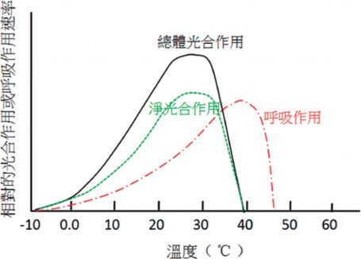
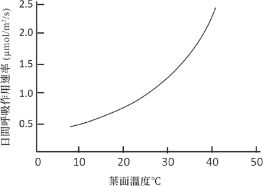
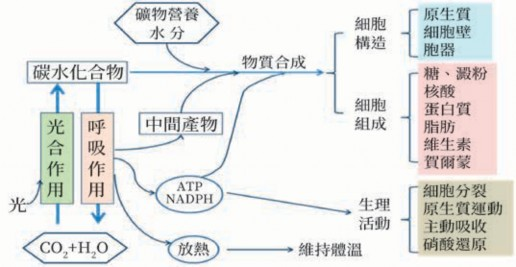
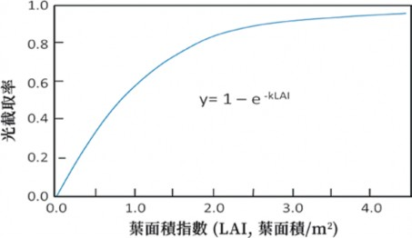
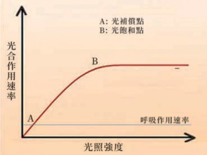
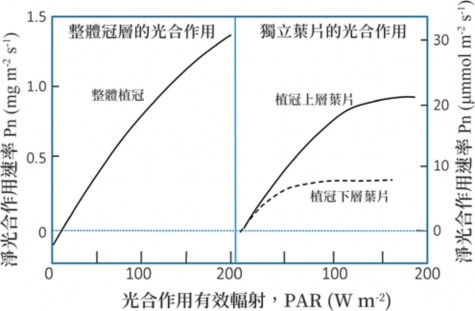
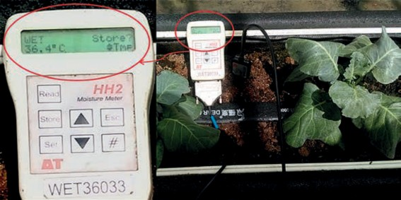

第一節 植物的重要生理作用
植物的生長有賴於光合作用利用太陽光能製造有機養分，加上根部吸收自土壤的水與礦物元素，透過完整的運輸體系，將生長所需的有機、無機原料分配到需要的地方；再經呼吸作用的配合，在同化作用與異化作用並進，以及有機、無機物質的重新組合轉化後，生成植物生長所需的碳架構與能量，提供植物的生長並完成生命週期。以下介紹與植物生長相關的重要生理作用。
一、光合作用
光合作用是綠色植物吸收太陽光能，

12H2O + 6CO2 + 光 → C6H12O6 (葡萄糖) + 6H2O + 6O2↑
將二氧化碳和水同化成有機物，同時釋放出氧氣的過程。其反應程式可以簡單表示如下：
植物之所以被稱為食物鏈的生產者，是因為它們能夠通過光合作用利用無機物生產有機物並且貯存能量。光合作用包含光反應及碳反應，前者在有光的條件下，利用光的物理能轉化成電能，過程涉及水的光裂解 (photolysis) 和光合磷酸化反應，
在類囊體膜上經電子傳遞鏈生成AT P和 NADPH形式的不穩定化學能。後者碳反應雖然無需光的直接能量，但利用光反應生成的ATP和NADPH，在葉綠體基質中藉由一系列酵素所促進的反應，最終轉化成穩定的化學能儲存在糖類化合物中。所以光合作用是能量及物質的轉化過程。
（一）光反應
植物靠葉綠體中的色素吸收功能，
傳遞到反應中心，啟動光合作用的第一步。葉綠體色素主要包括葉綠素、類胡蘿蔔素、藻膽素三類。高等植物只含有葉綠素、類胡蘿蔔素兩類色素，其分子數量比為3 ： 1 。其中，葉綠素呈綠色，主要包括葉綠素ａ和葉綠素ｂ；類胡蘿蔔素呈黃色，包括胡蘿蔔素和葉黃素。絕大部分葉綠體色素都屬於天線色素，只有極少數特殊狀態的葉綠素ａ屬於反應中心色素。這些色素分子組合成許多能完成光化學反應的最小結構的功能單位，被稱為光合單位，其中包括一個反應中心。天線色素在接收到光子的能量後呈激發狀態而不穩定，然後輾轉將能量匯流至反應中心。反
應中心分子在激發狀態下立即放出電子傳給光系統的電子傳遞鏈。
葉綠體的類囊膜上有兩個協同作用的
光系統，分別稱為光系統Ⅰ (PSⅠ) 和光系統Ⅱ (PS Ⅱ)。PSⅠ反應中心在波長700nm處有最大吸收值，以P700表示；PSⅡ的反應中心最大吸收波長在680nm，以P680表示。P680反應中心色素分子接收天線色素傳遞來的能量後轉變為激發態分子，並立即放出電子而呈具有強氧化能力的不穩定狀態，該激發態的P680從一個水分子的光裂解中取得一個電子而回復到穩定的基態，重新接收光能並再次被激發而釋放電子。
PSⅡ的一個重要功能就是進行水的裂
2H O
2
→4H +4e +O ↑
+
2
解和氧的釋放。PSⅡ的反應中心色素P680接收光能後變為激發態分子，並立即放出電子給光合電子傳遞鏈。P680 放出電子後，即呈具有強氧化能力的不穩定狀態，接著便從水分子中奪得電子，促使水分子發生光裂解並放出氧氣與氫離子，然後回復到穩定的基礎態。其反應式如下：
水分子裂解後在類囊體腔 (lumen) 內累積的大量質子 (H+)，可以經由類囊體膜上的ATP合成酵素共同運輸通道轉移到基
質中，並使ADP與磷酸 (Pi) 結合產生更多的ATP。
光合作用初始反應將光能轉化為
電能，而這種電能則繼續轉換成AT P和 NADPH才能用於碳反應中的CO2固定。光合作用中活躍的化學能的形成要通過光合電子傳遞和光合磷酸化來實現。當電子進入光合電子傳遞鏈後，按氧化還原電位順序依次傳遞，而在光合電子傳遞過程中，偶聯發生ADP和Pi結合形成ATP的過程，叫做光合磷酸化，合成更多的ATP。最終電子傳給NADP+，並與與一個磷酸 (Pi) 結合產生NADPH。ATP與NADPH則被用於碳反應中的碳固定。
（二）碳反應
碳反應是指利用光反應產生的高能 AT P和NADPH，將CO2 轉化為糖類的過程。碳反應在葉綠體的基質中進行。根據 CO2固定後最初產物的碳原子數目及代謝特點，碳反應可分為C3路徑、C4路徑和 CAM (景天酸代謝) 路徑等三大類。
C3途徑是最基本的，且為所有綠色光
合生物所共有CO2同化路徑。因為是由生理學家卡爾文提出，因此又稱為卡爾文循環。只具有C3路徑的植物稱為C3植物，

包括大多數植物種類，如水稻、小麥、番茄、胡瓜等大部分農作物和木本植物。C3路徑的反應依序可分為CO2羧化、還原、核酮糖1,5-二磷酸 (RuBP) 再生三個階段，均在葉綠體基質中進行。
CO2接受體的羧化階段
CO2進入葉綠體以後，在核酮糖1,5-二磷酸催化酶 (Rubisco) 的催化下，首先與RuBP結合，生成2分子3-磷酸甘油酸 (PGA)。由於PGA―該路徑形成的第一個穩定化合物是―三碳糖，故該途徑被稱為C3路徑。由於 CO2首先與RuBP結合，所以RuBP被稱CO2的接受體。
還原階段
在此階段，來自光反應中產生的ATP和NADPH將PGA還原為甘油酫3-磷酸 (GAP)。
RuBP再生階段
GAP的轉化有三個途徑，其中之一是留在葉綠體內轉化成澱粉；二是進入細胞質內轉化成蔗糖；三是留在葉綠體的基質，經過多步驟的中間產物催化反應後，重新合成RuBP，此過程即RuBP的再生。此一過程使C3循環路徑得以持續進行。
C4代謝途徑
部分植物的碳代謝過程中，CO2被固
定後形成的最初產物為草醋酸等含有四碳的化合物，這種碳同化路徑稱為C4路徑。具有C4路徑的植物則被稱為C4植物。C4路徑可被分成二氧化碳固定、四碳酸轉運、脫羧作用與三碳酸再生等四個階段。
二氧化碳固定階段
首先CO2是在葉肉細胞中被固定成為 H2CO3，然後在磷酸烯醇丙酮酸羧化酶 (PEP Carboxylase) 催化下，與CO2接受體―磷酸烯醇丙酮酸 (PEP) 結合，形成第一個穩定化合物―草醋酸 (OAA)。
轉運階段
OAA在酶與NADP的作用下，轉化為蘋果酸或天冬氨酸，經細胞原生質連絡絲轉運到維管束鞘細胞。
脫羧階段
在維管束鞘細胞內脫羧形成丙酮酸並釋放出CO2。CO2被轉移到維管束鞘細胞葉綠體後，被RuBP重新固定進入C3路徑。
再生階段
丙酮酸由維管束鞘細胞運回葉肉細胞，在酵素和ATP的作用下重新形成 PEP。
由於PEPC的活性很高，具有濃縮 CO 2 的作用， 可以使葉肉細胞中的 CO2濃度遠高於大氣的濃度。除了可
以確保在逆境下維持較高的CO2濃度外，還可避免光呼吸對光合作用的影響，因而提高C4植物的光合作用效率。
CAM代謝途徑
具有此型代謝途徑的植物，大多為適
應在極為亁旱的地區。這類植物在夜間開啟氣孔，首先將葉綠體中的澱粉經糖解作用形成PEP，然後PEP將從氣孔擴散進入細胞的CO2羧化固定成為草醋酸OAA，再進一步還原成蘋果酸貯存於液胞內。因此，在夜間細胞內的澱粉減少、蘋果酸增加、細胞液的pH值下降。白天氣孔關閉後，蘋果酸轉移到細胞質中進行脫羧，形成丙酮酸並放出CO2。其中，CO2進入C3路徑，合成澱粉；丙酮酸可以轉變為PEP再還原成丙糖磷酸，最後合成澱粉或者轉移到粒線體中氧化釋放CO2，重新進入C3路徑。因此，白天澱粉增加、蘋果酸減少、細胞液 pH值上升。
（三）光呼吸
核酮酸-1, 5- 二磷酸羧化／氧化酶 (Rubisco) 是地球上數量最多的蛋白質，它是光合作用中用於固定二氧化碳的酵素。在光合作用過程中，Rubisco可以催化RuBP與CO2結合形成二分子的三碳醣而完成光合作用；但Rubisco也可以催化RuBP和O2
結合而放出一分子的二氧化碳，也就是損失一分子已經被固定的CO2。這個過程叫光呼吸 (photorespiration)，其反應過程包括葉綠體、過氧化體及粒腺體三個細胞器。影響光合作用與光呼吸之間消長的是溫度和CO2對O2的濃度比率。當溫度逐漸升高或高於作物的最適生長溫度時，可能引起缺水逆境而使氣孔開度減小甚至關閉。已有證據顯示，當氣孔開度減小時，會降低 CO2對氧的比例，因而對光呼吸有利。
雖然表面上看起來，光呼吸對作物的光合作用效率有不利的影響，但光呼吸能有效的維持高溫或強光下葉綠體內的氧化還原平衡狀態，並且清除對光合機構內極具毒害的乙醇酸和乙醛酸 (劉，2016)。因此一般認為光呼吸對植物具有以下三個功能：
雖然乙醇酸對細胞有毒害，但卻是植
物光合代謝不可避免的產物。光呼吸則能消除乙醇酸，使細胞免遭毒害。
在葉片氣孔關閉或外界CO 2 濃度低
時，光呼吸釋放的CO 2 能被C 3 路徑再利用，以維持光合碳還原循環的運轉。
在強光及高溫下， 光反應所獲得的同化力超過CO 2 同化需要，使葉綠體中

NADPH/NADP和ATP/ADP比值增高， NADP+不足，會促進被光激發的高能電子傳遞給O2，形成超氧自由基，對光合機構具有傷害作用。光呼吸可消耗過剩的同化力，減少超氧自由基的形成，從而保護類囊體膜中PS II反應中心色素蛋白免遭破壞。
（四） 影響光合作用的因素
光是光合作用的驅動力，也是植物產
生葉綠素與葉綠體的必要條件。光對光合酵素Rubisco的量與活性，以及對氣孔的開度均有著直接與顯著的影響，因此光直接影響光合作用速率的高低。光照因素中有光強、光質與光照時間，這些對光合作用都有深刻的影響。
光合作用速率隨著光照強度的增加而增加，一般栽培可以根據作物的光飽和點來做光環境管理的依據。不過，作物光合作用如考慮到夜間的呼吸與非光合作用器官的碳消耗時，植物所需的最低光強度必須遠高於光補償點。如果從植物族群來看，冠層頂部的葉片往往接受到的光強度會超過光飽和點以上，而中下層葉片的光強度則仍處在光飽和點以下，因此利用調整行株距或採取整枝修剪的方法，改善中下層葉片的光照量，可以讓中下層葉片接受更多的光照，是園藝方法提高產量的基
本措施。
一般在光補償點和光飽和點之間，光合作用速率會隨光度的增加而增加。但植物的光補償點和光飽和點並不是固定不變的數值，它們會隨外界環境條件的變化而增減，例如，當大氣CO2濃度增加或溫度降低時，光補償點降低；而當CO2濃度增加時，光飽和點則會提升。一般情況下，高溫會促進呼吸速率的上升，因此會使光補償點提高而對光合產物的蓄積造成不利的影響。在這種情況下可以採取降低室溫、通風換氣，或補充CO2濃度以確保光合作用的順利進行。
C4型植物由於葉鞘細胞結構與光合酵素的不同，適合在高溫強光下進行，低溫弱光反而不利。在一般的光照強度下， C4型植物是不會出現光飽和現象，其原因是C4植物同化CO2的磷酸烯醇丙酮酸羧化酶 (PEPC) 與CO2的親和力高，以及C4型植物特有的維管束鞘組織，可以隔離氧和 Rubisco的接觸；同時還有濃縮葉肉細胞內 CO2濃度的機制，所以大氣中的CO2濃度不會成為C4植物光合作用的限制因素。
二氧化碳是光合作用的碳原料，植物
所需的CO2主要從大氣中獲得。CO2從大氣到達葉肉細胞與羧化酵素結合之間的途徑必須經過葉面靜止層、氣孔及葉肉細胞的
多重阻力，對光合作用速率的影響很大。二氧化碳從大氣進入葉肉細胞間隙為氣相的擴散作用，而從葉肉細胞間隙到葉綠體基質則為液相擴散，擴散的驅動力為兩點間CO2的濃度差；凡能提高濃度差和減少阻力的因素都可促進植物對CO2的吸收而提高光合作用速率。
空氣中的CO 2 濃度較低，約為415 ppm ， 而一般C3 植物的CO 2 飽和點為 1,000～1,500 ppm上下，是空氣中CO2濃度的3倍左右。如在密閉的溫室內，當清晨光合作用旺盛時，室內的CO2濃度可在1～2小時內降至200 ppm或更低。由於光合作用對CO2的持續消耗以及普遍存在多重的CO2擴散阻力，因而在葉綠體基質中的CO2濃度可以低到接近CO2補償點。因此，加強溫室的通風換氣或採取CO2施放措施，可以顯著提高作物的光合作用速率，促進生長，提高產量。這對C3植物尤為明顯。
光合作用過程中碳反應進行的CO 2
固定，是一個由酵素所催化的化學反應過程，因而對溫度的變化十分敏感。在強光、高CO2濃度時，溫度對光合作用速率的影響要比弱光、低CO2濃度時的影響大，這是因為在強光和高CO2條件下，溫度能成為光合作用的主要限制因素。
光合作用有一定的最適溫度範圍和
最高及最低限制溫度。光合作用的最低溫度 (下限) 和最高溫度 (上限) 是指植物在該高、低臨界溫度下所量測的光合作用速率已經衰減為零，而能使光合速率達到最高的溫度則被稱為光合作用的最適溫度。光合作用的溫度三基點因植物種類不同而有很大的差異。如耐低溫的甘藍在5℃就能明顯地測出光合速率，而喜好溫暖的胡瓜則在13℃以下時就受到抑制；耐寒植物的光合作用下限溫度與細胞結冰的溫度相近；而原生於熱帶的植物，如玉米、高粱、西瓜等在溫度降至10～5℃時，光合作用已明顯受到抑制。低溫抑制光合作用的原因主要是碳反應的酵素活性下降，氣孔開閉失調；低溫進一步發展時，各種細胞質體的膜脂呈凝膠態，葉綠體膜的超微結構受到破壞，因而使光合作用減緩或停止。
晝夜溫差對淨光合同化率有很大的影響。白天溫度高，日光充足，有利於光合作用的進行；夜間溫度較低，降低了呼吸消耗 (圖2.1)。因此，在一定溫度範圍內，適度擴大晝夜溫差，有利於光合產物的積累，對於產量與品質都有利。尤其在設施作物栽培管理上，要隨時注意環境溫度的調控，避免過高與過低溫度對光合作用的不利影響，同時留意夜間降溫與日夜溫差的問題，以期提高作物生產力。


圖2.1 溫度對總體光合作用、呼吸作用及淨光合作用的影響與其相關性
水分對光合作用的影響有直接的與間
接的原因。直接的原因是水為光合作用的原料，沒有水不能進行光合作用。但是實際用於光合作用的水不到蒸散水量的1％，因此缺水影響光合作用主要是間接的原因。缺水會使氣孔導度下降或關閉， 因
而使光合速率下降。一般在輕度缺水情況下，植物經供水後尚能使光合能力恢復；但若在嚴重缺水後，縱使供水後葉片水分潛勢可以恢復至原來水準，但光合速率卻難以快速恢復至原有程度。因此作物管理上，必須留意不使植株過度缺水，以免影
響生長與產量。綜合來看，缺水逆境影響光合作用的原因有下列幾點：
氣孔導度下降
葉片光合速率與氣孔導度呈正相關，當水分逆境時，葉片中ABA 量增加，促使氣孔關閉，CO2進入葉肉組織受阻。開始引起氣孔導度和光合速率下降的葉片水勢值，因植物種類不同有較大差異。
光合產物輸出受阻
缺水會使光合產物輸出變慢，加之缺水時，植物為調節細胞內的滲透壓，葉片中澱粉的水解增加，促進糖類累
積的結果會引起光合速率下降。
光合胞器受損
缺水時類囊體膜上的電子傳遞速率降低，影響光能的轉換。嚴重缺水還會使葉綠體變形，葉綠餅片層結構被破壞，不僅導致光合速率下降，而且使光合作用的能力無法恢復。
光合有效面積減少
在長時間缺水逆境影響下，作物生長速率减缓，使葉面積的擴展受到限制所致。
植物必須營養元素中有多個既是細胞
生命物質的組成元素，又是細胞內生理生化反應的參與因素。因此礦物元素在光合作用中的功能十分多元，現簡單整理如下：
成為葉綠體的組成元素
如N、P、S、Mg是葉綠體中構成葉綠素、蛋白質、核酸以及生物質膜不可缺少的元素。
電子傳遞鏈的重要成分
如Cu、Fe、Mn+2和Cl-在系統中都是不可或缺的元素。
磷酸基的作用
攜帶化學能的ATP和NADPH、光合作用碳還原循環中所有的中間產物、合成澱粉的前體ADPG，以及合成蔗糖的前體UDPG，這些化合物中都含
有磷酸基。
參與活化或催化作用
如Rubisco，FBPase等酵素的活化需要Mg+2；另外Fe、Cu、Mn、Zn是葉綠素的組成分；K+和Ca+2調節氣孔開閉；K和P促進光合產物的轉化與運輸等。
肥料三要素中以N 對光合作用的影響最大。通常葉的含N量、葉綠素含量、 Rubisco含量分別與光合速率呈正相關。葉片中含N量的80％在葉綠體中，施N既能增加葉綠素含量，促進光反應，又能增加光合作用酵素的含量與活性，加快碳的同化作用的反應。從N素營養管理較好的葉片中提取出的Rubisco不僅量多，而且活性高。
二、呼吸作用
呼吸作用 (respiration) 為生物體細胞將
含碳有機物經低溫氧化而將能量釋放提供各種生理作用所需之過程。植物從光合作用中獲得的基本最終產物為葡萄糖，而呼吸作用的反應程式恰與光合作用相反，從葡萄糖開始進入呼吸的代謝途徑，其反應式如下：

C6H12O6 + 6O2 → 6CO2 + 6H2O + 能
量 (673 kcal)
呼吸作用的反應基質 (substrate) 以直接利用六碳糖，如葡萄糖、果糖及葡萄糖-1-磷酸 (G-1-P) 等為主；而這些六碳糖的來源可從澱粉、蔗糖、脂肪、蛋白質等分解產生。不過植物利用蛋白質作為呼吸基質的機會極少，只有在前三者不可獲得時才有可能為之。每分子糖代謝後可釋出 673kcal能量。其中有約40％被儲存於ATP中，其餘則以熱能釋出。
（一） 呼吸作用的生理功能
呼吸作用必須消耗植物體內的碳水化合物，這對光合作用同化產物的累積來說是一種反向的支出，因此呼吸對植物必有重要的意義。其主要的生理功能如下：
呼吸作用提供必要的能量給植物細
胞維持生理正常活性外，還提供能量給根部行礦物離子的主動吸收、細胞分裂和分化、有機物的合成與運輸，以及生長所需的能量。
呼吸過程中不同代謝途徑所產生的許
多中間產物可提供作為重要生命物質的合成原料，例如氨基酸、蛋白質、酵素、脂
肪酸、核酸、荷爾蒙、維生素及多種二級代謝產物等等，並可作為生長所需的碳架構。
呼吸過程會產生NADH及NADPH等還
原物質，可以為蛋白質與脂肪的生物合成及硝酸鹽的還原過程提供還原力。
（二） 維持呼吸與生長呼吸
如果從功能性的含義來解釋，則呼吸可被分為生長呼吸 (growth respiration) 和維持呼吸 (maintenance respiration) 和與離子吸收有關的呼吸 (Bruhn, D. 2002)。雖然也有學者認為與離子吸收有關的呼吸應併入生長呼吸，因為只有新形成的細胞與組織才需要礦物營養作為組成元素。植物需要維持呼吸來滿足修復和維持現有組織和細胞正常生理狀態的能量，其中用於蛋白質與脂質的周轉更新與維持胞器膜內外離子梯度的能量，占維持呼吸的大部分能量需求。植物為了生產新的生物質，需要透過呼吸作用提供更多的碳架構、還原當量 (NADH、NADPH) 和能量 (ATP)。通常，生長較快的植物將可獲得的碳水化合物用於生物合成的比例要比生長緩慢的物種多，因此呼吸率也比較旺。植物在遭遇不利的環境因素時，自體引發的生理調適作用，會使維持呼吸的比重明顯大於與生長與離子吸收等相關的呼吸，這種現象會
改變植物對光合作用產物在體內不同器官之間的分配與轉運。這種現象也說明植物體內，維持呼吸對光合產物有優先分配的順序。植物體在不同生育階段、不同組織或器官的呼吸速率明顯不同。發芽中的種子、正在發育生長中的組織或器官，如芽體、花苞、幼果，以及旺盛生長的根系等，需能較多，所以呼吸速率通常都比較高。反之，休眠中的組織或種子的生理代謝緩慢，需能量少，故呼吸速率就低。
有學者認為植物體中有固定比例的碳水化合物提供作為維持呼吸所需，但實際上維持呼吸可能會消耗掉每天光合產物中的25～100％。因為這關係到光合作用與呼吸作用所處的不同環境。例如高緯度地區冬季低日照及低緯度地區的高溫、亁旱等逆境下，維持呼吸的碳消耗可能大於光合作用的碳同化作用，以至於沒有多餘的碳水化合物可供生長。
（三） 呼吸作用的過程
呼吸雖然是一種氧化反應， 但不論是否有氧的參與，都可經由不同路徑完成反應，並釋放出不同產物。其中有氧參與的呼吸作用，稱之為有氧呼吸；沒氧參與的反應，則稱為無氧呼吸。其中有氧呼吸過程可以分為三個主要階段，分別是糖解作用 (glycolysis)、檸檬酸循環 (citric acid
cycle)，以及粒線體電子傳遞鏈 (electron transport chain)。前述代謝過程中產生的中間產物可以經由多個點進入呼吸過程而作為呼吸基質；同樣地，這些中間產物也可以離開呼吸鏈，提供作為各種化合物生物合成的前驅物。因此，呼吸作用的過程與許多其他代謝途徑有緊密的連帶關係。
糖解作用是呼吸作用的第一階段反
應。首先，細胞從儲藏性碳水化合物如澱粉、果聚糖、蔗糖經水解轉化產生果糖-1,6-二磷酸 (F-1,6-P) 進入醣解作用，然後F-1,6-P經酵素分解轉成為二分子具有三碳的丙酮酸 (pyruvate)，同時產生高能產物ATP及還原產物NADH。醣解過程並無氧的參與，是有氧呼吸與無氧呼吸的共同途徑。雖然，無氧呼吸的過程中只產生少數的能量，但是足以提供維持細胞生命所需；而且在正常有氧情況下，丙酮酸會進入粒腺體中繼續代謝而獲取更多的能量。但如果在缺氧的情形下，則路徑轉為無氧呼吸，而在發酵過程中會把醣解作用過程中產生的NADH消耗。
檸檬酸循環是呼吸作用的第二階段反
應，丙酮酸在這一循環中完全氧化成為二氧化碳與水。丙酮酸先在酵素作用下，經過去羧基、氧化與再結合等過程而形成乙

醯輔酶-A，然後在檸檬酸合成酶作用下形成檸檬酸。在檸檬酸的循環過程中的重要中間產物包括酮戊二酸、琥珀醯輔酶-A、琥珀酸、延胡索酸、蘋果酸及草醯乙酸等，都可能離開循環而參與其他的代謝。最後草酸乙醯與乙醯基縮合再生一分子檸檬酸重新開始循環。在此循環路徑中， 每分子六碳糖可以獲得二個AT P、六個 NADH、二個FADH2及釋放四分子的CO2。
第三階段是電子傳遞鏈，是粒腺體內
膜上傳遞氫質子或電子到氧分子 (O2) 的一系列傳遞系統，該系統的組成分子按還原電位順序排列相互銜接。NADH與FADH2將電子經由粒腺體內膜上的電子傳遞鏈給氧分子後，結合氫離子產生水，並偶聯氧化磷酸化反應，結合ADP和Pi生成ATP。植物體一般約有95％的ATP來自氧化磷酸化作用，只有少量的ATP是通過非氧化磷酸化產生的。
無氧呼吸是在細胞質中進行。細胞在
氧氣不足 (10％以下) 或無氧狀況下，經發酵作用將三碳醣 (丙酮酸pyruvate) 分解釋放一分子CO2後轉化成乙醛，再經NADH還原成為乙醇或乳酸 (latce acid) 的過程。這是植物在缺氧情形下的呼吸路徑，產生的能量少，產能效率只有正常氧化磷酸化反應
的4％。但足夠藉以維持生命活動進行，並使還原能力NAD+得以循環繼續。不過酒精對細胞有毒害作用，長時間積存下會導致細胞死亡。所以乙醇進一步轉入過氧化體 (peroxisome) 形成甘氨酸並釋放一分子二氧化碳。無氧呼吸常見於根部通氣不良或淹水的時候，一旦淹水影響的時間拉長，則根系活性劇減或因酒精積累而爛根，對地上部的生長也會造成不利的影響。
氧化戊糖磷酸途徑 (oxidative pentose
phosphate pathway) 是糖解作用的替代路徑，其產物包括四碳醣、五碳醣以及 NADPH。此一路徑在細胞質中進行，和糖解作用有許多共同的中間產物，並且互相關聯。正常情況下，糖解作用產生的F-6-P進入檸檬酸循環。但在氧化戊糖磷酸途徑則將G-6-P經二次脫氫氧化及脫羧後放出一分子CO2、一分子核酮糖-5-磷酸 (RuBP) 和二分子NADPH。然後RuBP經多個步驟轉化為中間產物核酮糖-5-磷酸和核糖-5-磷酸可以進入糖解路徑。前述中間產物是合成核苷酸的原料，同時也是多種二次代謝產物與植物荷爾蒙的前驅物。
一般六碳糖的代謝中，僅約5～20％的呼吸是透過氧化戊糖磷酸途徑發生，但是它使植物在逆境下仍然可以提供DNA與 RNA的合成與修補，以及酚類化合物所需
的中間物質，顯然對植物從逆境中恢復的意義十分重要。通常植株在感病、受傷、老化或面臨乾旱、高低溫及鹽分等生理逆境的時候，氧化戊糖磷酸途徑途徑的比例會增加。
（四） 影響呼吸作用的環境因素
細胞呼吸是由多種酵素參與和催化的
一系列生理反應過程，因此溫度對細胞呼吸作用具有關鍵性的影響。植物的呼吸作用速率在0～35℃間的Q10值 (即溫度每升高10℃，呼吸作用速率增加的倍數) 約為 2～2.5。呼吸作用的最適溫度一般為25～
35℃，上限溫度則可以到35～45℃。在作物生長適溫範圍內，細胞呼吸速率隨溫度的升高而加快，而且在接近呼吸活性的上限溫度時，速率反應曲線是呈現指數型 (exponentially) 的增加 (圖2.2)。但超過最適溫度後，細胞呼吸將急劇減弱，直至停止。相對於呼吸作用，光合作用對溫度的反應為比例型的增加，而且一般作物的光合作用上限溫度比呼吸作用低。這就是高溫對光合作用及作物生長不利的原因。因為在高溫下，呼吸作用的碳消耗速率容易超過光合作用的碳同化速率，使植物處在碳源不足的饑餓狀態，長時間持續下會使植物崩解死亡。

圖2.2 呼吸作用對葉面溫度變化的反應曲線
(controlled atmosphere storage) 中，一般將

根是植物重要生長中心，必須隨時保持高度生理活性，以維持良好的根系擴展與新根的產生，這樣才能維持正常的吸收功能，供應地上部的需求。有研究顯示，在正常環境下，大約有15～30％的光合產物是經由根部呼吸消耗，但是如果根系處在超過適溫範圍的熱逆境下，則其消耗比例可以達到50～80％之多。因此在台灣夏季栽培時，妥善做好根部的防曬或降溫處理，對降低根系呼吸速率與改善根系活性應有明顯幫助。
氧氣促進有氧呼吸，抑制厭氧呼吸，
在正常生育溫度範圍內，呼吸強度隨著氧氣濃度的升高而增大。基於大氣中氧的濃度相對穩定，因此氧對地上部或許影響不大，但對根部的活性則特別重要。一般可以透過改善土壤質地、中耕鬆土、避免淹水等農業操作舒解根部缺氧的問題。
二氧化碳是空氣的重要組成分，增加
二氧化碳濃度對有氧呼吸有抑制作用。 因此在進行CO2施放作業時，必須做好濃度的控制，以免造成不利的影響。不過對於生鮮農產品貯運上倒是常利用提高CO2濃度來抑制呼吸作用，以延長儲存時間，維持產品新鮮品質。例如在水果的氣調貯藏
二氧化碳濃度控制在2～5％之間，但對光皮甜瓜、草莓、櫻桃等水果則可以調控在 15％上下。葉片暗呼吸是決定植物組織生長和維持以及碳循環的決定性因素。研究顯示，日間提高CO2濃度明顯加快光合作用速率，同時對暗呼吸速率也有促進的效果。一般推論呼吸速率的提高是因為更多的蛋白質與碳水化合物的合成而驅動了糖降解作用、三羧酸循環和粒腺體電子傳遞能量代謝途徑的代謝活性 (Li, et al., 2013; Kromer, 1995)。
一般認為光對呼吸作用的影響不大，
因為不管白天或黑夜，活細胞的呼吸都持續進行。通常光照對呼吸的影響是間接的，如果在涼溫季節，光使葉面溫度增高，因而可促進呼吸進行。不過也有研究觀察到，前一個光期的光合作用速率會影響暗期的呼吸率。也就是如果日間的光照充足，光合作用旺盛，則緊接著的暗期，植株的呼吸作用速率增加。推測其原因可能為更多的光合產物需耗能運輸，以及更多的生長需要更多的呼吸能量與提供碳架構的中間產物所致 (Amthor, 1989)。在低光條件下，碳水化合物供應受限制，導致呼吸作用減緩，相對應的生長速率也會同步減緩。
三、蒸散作用
植物的蒸散作用 (transpiration) 是指
內部的水分從植物體表面以水蒸氣狀態散失到大氣中的過程。一般蒸散的途徑有氣孔、皮孔與角質層三種。其中以氣孔蒸散為最主要，占了蒸散總量的90％以上；角質層蒸散是經由葉片上的角質層和草本植物莖表皮上的角質層而產生的蒸散，其蒸散量只約占蒸散總量的5～10％；皮孔蒸散則是透過枝條的皮孔和木栓組織的裂縫進行，其蒸散的量更小，約占蒸散總量的 0.1％。因此一般討論的蒸散作用，指的都是氣孔蒸散。由於蒸散作用主要是水分從葉肉細胞的濕潤表面蒸發後經由氣孔調控下逸出植物體，所以它與物理現象的蒸發過程不同。蒸散作用不僅受到植物本身的調節和控制，而且還受到外界環境包括光、溫度、濕度、CO2濃度及風等多個因素的影響，因此蒸散是一個極為複雜的生理過程。
（一）蒸散作用的生理功能
蒸散作用是植物對水分與礦物元素的吸收和運輸提供驅動力，如果沒有蒸散拉力引起的吸水，則礦物元素也就無法隨水分的吸收和流動而分布到植物體各部位去。
植物透過蒸散作用而降低葉片的溫度。水在20℃時的汽化熱為2445焦耳。因
此，蒸散能夠降低葉片表面的溫度，使葉片在強光下進行光合作用而不致受害。
提供光合作用反應過程中所需要的水，通常只占總蒸散水量的1～2％。
（二）影響蒸散作用的環境因素
蒸散速率取決於葉片內外蒸氣壓差和擴散阻力的大小。造成蒸散擴散阻力的因素包括葉肉細胞阻力、氣孔阻力與葉面的靜止介面層阻力。所以凡是影響葉內外蒸氣壓差和擴散阻力的環境因素，都會影響蒸散速率。
光對氣孔的開啟有直接的影響， 尤
其藍光，當光度增加時可以減少氣孔的阻力，因而可以增強蒸散作用。其次，光可以提高大氣與葉片的溫度，增加葉片內部與大氣之間的蒸氣壓差，加快蒸散速率。
溫度對蒸散速率的影響可以分成兩
個層次。在最適溫度以下時，隨著溫度的升高，蒸氣壓差加大，所以蒸散加快。在根部水分供應正常的前提下，氣溫在20～ 30°C之間時，氣孔的開度最大，蒸散速率最快。但當氣溫過高時，葉片因過度蒸散而面臨缺水逆境，使氣孔開度減小或蒸散減弱。

空氣相對濕度對蒸散作用有明顯的影
響。當溫度相同時，葉片內部與大氣間的蒸氣壓差隨相對濕度的增加而縮小，蒸散減緩；反之，大氣的相對濕度較低，則蒸散速率加快。蒸散的最大驅動力來自於氣孔內的蒸氣壓與大氣中的蒸氣壓差。通常認為葉肉細胞表面的蒸氣壓為100％，所以當大氣濕度增加時，減少了蒸氣壓差，因此蒸散作用降低。在相對濕度特別高的情況下，氣孔的開度也會減小或關閉。
植物根部吸收的水分有絕大部分用在
蒸散作用上，所以在土壤水分供應受限的情況下，蒸散速率趨於減慢。例如在光線和溫度有利於蒸散繼續進行的情況下如果土壤水分含量減少，植物葉片即可能出現缺水現象，導致氣孔關閉。
氣孔的開度受到細胞間隙CO2濃度的
影響，當大氣CO2升高時，細胞間隙的濃度也會升高，進而抑制氣孔的開度，因而增加氣孔阻力，減小蒸散速率。
溫室內每秒0.5～1.0公尺的微風可以帶
走葉片表面的水氣，減低葉面靜止介面層的厚度與阻力，有利蒸散速率的提升；但風速大於每秒2公尺以上時，氣孔受機械刺
激而關閉，反而不利蒸散作用。
四、吸收作用
植物的吸收主要是靠廣大的根系以
及根系表皮上的根毛。根毛是表皮細胞的凸起，目的為增加吸收的表面積。根部對土壤水分的吸收一般是靠簡單的水分濳勢梯度差而被動地擴散進入根細胞。當水進入細胞時，其水勢變得比其旁邊的細胞高，因此，水通過擴散作用進入下一個細胞，或經由細胞外的間隙通道而從未真正進入細胞。不過，礦物質離子的吸收與水不同，所有礦物質不能被根部以被動形式吸收，其原因之一為礦物離子都帶有電荷的形式存在於土壤溶液中，不能穿過細胞膜；其二為土壤中礦物質的濃度通常低於根細胞中的濃度。因此，礦物離子必須通過主動吸收進入表皮細胞的細胞質再進入根部中柱，這需要ATP的能量；也因此根部細胞通常會保持高度的活性而擁有較高的呼吸速率。
離子的主動吸收會造成根部細胞與土壤溶液間的水勢梯度，並因此導致水分的被動吸收。一些離子可以被動地進入表皮細胞，另根毛細胞膜中的特定蛋白質可將離子從土壤中主動泵入表皮細胞的細胞質中。因此礦物離子可以通過被動和主動運輸從土壤中被吸收而停留在表皮細胞中。
內胚層細胞的質膜中有許多嵌入的轉運蛋白，這些轉運蛋白扮演離子穿過膜運輸的控制點，可以調節進入木質部的離子的數量和類型。值得注意的是，內皮層細胞間有卡式帶與木栓層的存在，根部內皮層僅能允許單一方向朝中柱主動運輸離子，為的是防止這些離子在濃度梯度下，由中柱擴散到土壤中而損失了。礦物離子與水進入內皮層細胞內，使質外體的離子濃度降低，水分濳勢上升。離子則透過原生質連絡絲進入中柱，中柱活細胞在耗能的作用下將其引入導管，如此使中柱、內皮層細胞與皮層細胞質外體間形成水分濳勢梯度，水分被動往中柱移動而形成根壓。但根壓對導管內運輸的力量貢獻較小，主要是靠導管內的蒸散流。
五、運輸作用
高等植物的地上部與地下部對於碳
水化合物的製造與分配及礦物營養的吸收與運輸有明顯的分工。簡單來說，植物體內的運輸主要包括兩種，一為根部吸收的水及礦物營養元素經由木質部往上運輸至莖、葉、花、果等需要的地方；以及葉片及綠色部位將光合作用合成的碳水化合物經由韌皮部運往根、莖、花、果實等非光合器官。
（一） 木質部的運輸
木質部維管由死細胞組成。這些細胞帶有空心管腔，管細胞的端壁消失，因此形成了一個長而開放的導管。管細胞具有厚實堅強的纖維素細胞壁，除了運送水以外，還有助於植物體的支持作用。木質部運輸的物質除了水及溶解在水裡的無機離子外，還包括一些有機酸、胺基酸、植物賀爾蒙等有機物質。水及溶質在木質部的運輸主要依靠三種力量：
水在氫鍵的作用下，藉著水分子之間
的內聚力，以及水分子與導管壁之間的附著力，而在導管中形成一條連續不斷的毛細管水柱，幫助了水的向上移動。
根部的內皮層細胞透過主動運輸將溶
質泵入中柱細胞，使之含有高離子濃度，與土壤溶液間形成滲透壓梯度，有利水分子被動擴散進入根部導管細胞，提高水分濳勢，形成根壓並向低水分潛勢的葉片運輸的方向。
蒸散作用降低葉片中的水分潛勢，進
而在蒸散拉力的作用下，水從根部克服重力向上運輸；同時，三者共同作用使得水以類似於水柱的形式在木質部導管中向上移動。

（二） 韌皮部的運輸
植物生長所需的碳架構基本物質是由光合作用的碳水化合物轉運、代謝及轉化形成而來，主要的供源 (source) 是葉片，需要輸入光合產物的非光合作用組織則是積儲 (sink)。輸入的碳水化合物可以作為生長需要而用，也可作為肥大器官的儲存。不同積儲間對碳水化合物的競爭有強弱之分，一般植物在不同生育階段都會有其主要的生長中心，這是植物在不同生長階段具有優先發育、代謝旺盛、生長快速的器官或組織。因此生長中心是最強的積儲，對有機物質需求最大，與其他部位的競爭力也最強。韌皮部的主要功能，是將葉片中光合作用的產物輸送到植物各個需要的部位，其中糖類占90％以上，其餘是蛋白質、氨基酸、維生素、無機鹽和植物荷爾蒙等。韌皮部由活細胞，包括篩管、伴細胞、韌皮纖維和薄壁細胞組成一根長管，沿著木質部組織延伸。篩管末端帶有篩板，篩板上有孔道相通；伴細胞與每個韌皮部篩管間相伴連通，控制篩管的功能並提供運輸所需的能量。
光合作用產生的糖一般直接往外運輸或用於呼吸，當光合作用速率大於輸出速率時，合成的六碳糖則會先轉化成蔗糖或澱粉分別暫儲在細胞質或葉綠體中，待夜間繼續運輸。光合作用生成的產物主要
是以蔗糖的形式從葉片經韌皮部往積儲部位運輸。這個過程包括供源端的裝載、篩管中的運輸與積儲端的卸載。蔗糖透過細胞膜的蛋白運輸體的裝載進入韌皮部的篩管，卸載時則經由篩管細胞原生質連絡絲直接進入積儲細胞，這就是所謂的共質體卸載方式。當共質體卸載受阻時，蔗糖會先離開篩管，進入細胞間隙，經過質外體進入積儲細胞。不論裝載與卸載皆需要耗費能量才能完成。蔗糖在篩管中的長距離運輸，主要是靠質流 (mass flow) 的方式進行。根據Munch (1930) 提出的假說，蔗糖濃度在韌皮部的供源端與積儲端產生濃度的梯度差，而這種梯度差主要靠供源端不斷地把蔗糖透過蛋白運輸體向篩管伴細胞輸送蔗糖，提高滲透壓，使木質部的水分進入篩管，增加水分濳勢，質流便往積儲端流動；而在積儲端則經由共質體通道持續卸載蔗糖使滲透壓降低，水分濳勢增加，水便流出篩管，重新進入木質部向上移動。如此循環不息，完成了碳水化合物的運輸作用。
六、構成植物生長的物質
生長 (growth) 是植物個體在細胞大
小、數目與乾物重的增加，而這種增加是為一種不可逆的生物現象，如株高長高、枝幹變粗、果實長大等。細胞數目的增加
主要靠細胞分裂，由生物遺傳機制控制，是為無限的增加；細胞體積的增加包括原生質、細胞內容物及水的增加，因受細胞體積與表面積的限制，因此為有限的增加。
由於植物不斷地生長而帶來細胞的數目與體積的增加，所以植物隨時都需要有足夠的生長必須物質來填充新生細胞的細胞壁與原生質內容物。同時，植物體在維持生命與生長的過程，還需要大量的能量來維持細胞的生理活性與生命物質的製造、轉運、轉化與合成。前述所有植物體生命活動的過程都可以由植物營養器官與各種生理代謝作用來完成，並提供所謂的生命物質，或稱為植物的組成物質。構成植物生長的物質包括：
（一） 無機物質
植物體中的無機物質成分包括碳、氫、氧及植物的必須礦物營養元素。碳、氫、氧主要來自空氣中的二氧化碳及根部吸收的水，經由光合作用結合成糖，再透過呼吸作用進入各種不同的代謝路徑與從根部吸收而來16種植物必須礦物營養元素結合生成各種植物生長所需的物質。
（二） 有機物質
主要由呼吸過程的許多中間產物提供，如例如氨基酸、蛋白質、酵素、脂
肪、核酸、荷爾蒙、維生素及多種二級代謝產物等等。
糖類既是細胞能量的主要來源，同時
也是轉化為其他化合物的基本原料，其主要組成元素為C、H、O，一般將其統稱為碳水化合物。糖類按其組成分類可分成單糖、雙糖與多糖。單糖中的六碳醣主要為提供能量；五碳糖則為構成核酸的物質。雙糖如蔗糖可為暫時的儲藏物質，分解成單糖後可以為細胞提供能量；蔗糖也是植物體內主要的運輸糖。多糖類如澱粉則為重要的儲能性多糖，分解成單糖後同樣可以提供能量；纖維素則是植物的結構物質，是細胞壁的主要成分。
由碳、氫、氧三種元素組成，部分脂
質還含有少量的氮和磷。脂質依化學性不同可分為脂肪、磷脂和蠟。脂肪由一分子甘油和三分子脂肪酸縮合而成，是植物體內的重要儲能物質；磷脂由1個含氮堿基、 1個磷酸、1個甘油及2個脂肪酸組成，是細胞膜、核膜等的有膜結構的主要成分；蠟則是角質層的主要成分，對植物具有保護作用。
蛋白質是一種大分子化合物，由氨基酸組成，每個氨基酸分子至少含有一個氨
圖2.3 植物光合作用及呼吸作用與構成生長物質之間的關係

基與羧基，並且連接在同一個碳原子上。蛋白質的功能有a) 構成細胞和植物體的重要物質─結構蛋白； b) 參與調節細胞和生物體活性的功能，稱為功能蛋白，如酵素； c) 提供生命活動所需的能量； d) 參與跨膜物質的轉運等，如脂雙層膜上的運輸蛋白。
由1個含氮堿基、1個磷酸和1個五碳糖
組成，是合成去氧核糖核酸 (DNA) 與核糖核酸 (RNA) 的重要物質。主要功能為攜帶遺傳資訊。
是植物生長和代謝所必需的微量有機化合物，對植物的生長與發育扮演著重
要的調節角色，如種子發芽、細胞分裂、生長與衰老等都有影響，從細胞的分裂、伸長、分化到影響植物的發芽、生長、開花、結實、性別決定、休眠和脫落等。此類物質包括生長素、激勃素、細胞分裂素、離層酸、乙烯及芸苔素等。
此類物質包括有機酸類，如檸檬酸、
蘋果酸；芳香族化合物如香草醛、甲基水楊酸鹽等，是植物特殊香氣的成分；另有木質素與單寧是複雜芳香族物質與碳水化合物結合的化合物；色素類如胡蘿蔔素、花青素、黃色素等；類萜與脂醇類，這類物質包括芳香油、類脂及多種生物鹼等。

植物生長過程所產生的各種物質，都來自於光合作用的碳化合物及從土壤中吸收的水及礦物營養元素。這些有機物的合成作用 (即同化作用anabolism) 及分解作用 (即異化作用catabolism) 合稱為代謝作用 (metabolism) 。植物的生物合成過程中，即包含了各種複雜的代謝作用與代謝路徑。首先，植物透過光合作用將二氧化碳和水轉化成糖，藉由呼吸作用的生化反應下，結合從根系吸收的水及礦物元素，形成生命的基本分子氨基酸、核苷酸、糖類及脂肪酸等。同時，再經過複雜的代謝作用與
不同的代謝路徑中合成DNA、RNA、蛋白質、脂質與多糖等大分子。這些大分子再經代謝而結合成為超大分子系統，如生物膜系統、酵素系統與核糖體等。最終產生細胞核、粒腺體、葉綠體、內質網等等的細胞胞器及細胞壁而形成一個新的細胞。新生細胞則繼續增殖與分化，依序形成不同的組織與器官，最後塑造成一個完整的植物體。圖2.3可以說明光合作用及呼吸作用在植物生長與生合成各種成分物質之間的關係。

第二節 環境因素對作物生長的影響
植物從種子發芽，歷經生長、分化、開花、結實過程中所有生理代謝活動都受到多個環境因數的影響，而這些因數緊密相連而且互相影響，其中包括光、溫度、水分、CO2及風等。
一、光
在太陽所發射的總輻射中，估計只有
不到5％的能量被利用於光合作用合成碳水化合物，最後轉換成生物質。地球上的綠色植物透過光合作用將太陽輻射能轉換進入生物圈。對於植物來說，輻射為一種能源，也是一種光形態發生的刺激源。
（一）光的特性
太陽是自然界植物生長的唯一光 源，在地球大氣層的最外層，輻射為 1367+ 7Wm-2，這是世界氣象組織 (World Meteorological Organization, WMO) 在1981年所修定的太陽能常數。其中超過一半以上的輻射會因折射和漫射而消失在太空大氣中，或被空氣中的物質顆粒吸收。在投射到達地球表面的輻射以波長範圍
從290∼3000nm占絕大部分，稱為全球輻射 (global radiation)。在晴空之下，投射到
地球表面的輻射量約為500Wm-2，如果以光量子通量 (PPFD) 表示，約為2200µmol m-2 s-1；也就是只有不到五分之二的太陽光輻射能到達地面 (姚，2011)。其中約有 45％輻射落在400～700nm之間，是植物光合作用主要利用的波長範圍；此波長被定義為光合有效輻射PAR (photosynthetically active radiation) (Nobel, 1991)。另約有50％的紅外線 (700nm以上) 和約5％的紫外線 (400nm以下) (Sayigh, 1979)。紫外光依據波長的不同可分為為紫外線A、B及C三種，紫外線A為320～400nm的輻射，對作物屬於無害的光；紫外線B為280～320nm的波長，此波長的光所釋放出能量足以穿透植物表皮組織而引起傷害，農作物受紫外光傷害也以此波長為主；紫外線C為195～ 280nm，因為是具有更高能量的短波幅射，會破壞染色體和蛋白質，甚至殺死細胞。不過此一波長的紫外線在抵達地面前已被大氣中的臭氧、水氣和其他大氣分子強烈吸收，實際到達地面的量已微乎其微。
光是植物光合作用和生長發育的動力能源，同時在植物形態發生和許多生理代謝過程中扮演各種信號啟動與刺激反應的角色。光對植物生長和發育的影響可以從
光強度、光質 (波長) 和光週期等三個不同特徵來討論。
（二） 光強度
光強度的變化直接影響作物的光合作用與生長速率。光照射到植物葉片上基本會有三個反應，一是在葉綠素中利用光能激發電子，轉換成能量以完成光合作用，生成植物所需的糖並釋放出氧分子；其次是當電子回復到非激發態時，或多或少地有一部分能量會以螢光釋出。正常情況下，產生的螢光很少，但是如果在光或溫度逆境下，螢光產生多，則表示光合作用效率下降。第三種反應就是光轉換成熱，使葉片溫度上升。從栽培的角度來看，一定是希望最大程度地將光能用在光合作用上，以換取更大的產量。植物對光強度的需求與植物的種類、品種、生育階段及長
期對自然條件的適應性有關。根據作物生長對光強度的要求，可概分為：
好光型作物， 適合光強度在1 0 9 0 ～ 1650µmol m-2 s-1以上的陽性作物。
適應光程度在450～725µmol m-2 s-1以下的弱光型作物。
適合在725～1090µmol m-2 s-1的中間型作物。
表2.1為常見作物的好光性與光飽和點，可以作為栽培上作物對光需求的判斷與參考。
植物對光強度的需求隨著植株的成長而逐漸增加，因此苗期的植株通常比成熟植株需要的光強度較低，植物在子葉展開後對光的需求就逐漸增加。雖然苗期的需光量較低，但如果幼苗光照不足，會刺激苗株的下胚軸細胞伸長，結果形成了軟弱的苗株，對後續的生長發育帶來不利的
表2.1 常見作物的最適光照強度及不同計量單位的近似值換算
植物別 | 光照度 (Lux) | PPFD (µmol m-2 s-1) |
番茄、茄子、胡瓜、西瓜、甜瓜、南瓜、扁蒲、芋頭、山藥、玫瑰、葡萄、梨、芒果
60,000～90,000 1,090～1,650 以 上
中間型作物 甜椒、草莓、甘藍、白菜類、蘿蔔、胡蘿蔔、蔥蒜類及一般盆花植物等 | 40,000～60,000 | 725～1,090之間 |
菠菜、萵苣、茼蒿、芹菜等綠葉菜類、薑、多
25,000～40,000 450～725 以 下
數蘭科植物和觀葉植物

影響。及至旺盛的營養生長期與開花結果期，光照環境最好維持在穩定且接近光飽和點的光照強度，以促進最大的光合作用速率。作物栽培時，增加種植密度可以增加產量，但密度需與植株高度一併考量，以免高植株、高密度使植冠中、下層的葉片光照不足，反而對增產不利。植物間距或單位面積的栽培密度取決於植物本身所占空間大小以及植物的整枝方式。溫室番茄平均每株至少應有0.36平方公尺的生長面積 (包括走道間距)。在較大的溫室面積中，採取高密度栽培會使果實變小。在固定的空間中，提高密度雖然可以增加果實的數量，但是通常無法增加果實的總重量，因為單果重量與獲得同化產物的分配比例會因果實 (積儲) 的增加而降低。
就光強度對產量的影響來說， 荷蘭 Wageningen大學的Heuvelink (2015) 即曾指出，作物每增加1％的日光輻射截取量，可以增加1％的產量；同樣在光飽和點以下比較相對生長速率，則在番茄苗株上每增加1Wm2的補光能量，就可以促進苗株長，使達到6葉齡的時間縮短1％ (Klapwijk, 1981)。縮短生育期就等於增加複作指數，間接提高溫室空間的使用效率。在荷蘭的盆花生產上，光強度對植物的分枝也有影響。通常光度增強可以增加分枝數，因而改善盆花植物的株型與開花數。從番茄、
胡瓜、甜椒的試驗觀察到，10Wm-2的補光措施只在冬季低光照期間對植株有明顯的提高相對生長速率的效果；一旦進入春季較佳光照環境以後，相同的補光量卻無法獲得與冬季相同的增長速率。
（三） 葉面積指數與光截取率
作物的產量取決於總生物質 (biomass)的產量與分配。生物質生產主要由光合作用進行，光合作用的效率在很大程度上取決於光的截取，而光的取截又隨葉面積而變化。太陽光投射到植冠後大部分被葉片吸收、遮蔽、反射，另有部分光則穿透葉片或穿過枝葉縫隙直接到達地面而未被植物利用。所以植冠對入射光的截取量影響作物對光的利用效率及最終產量；而光的截取率通常會受到葉面積指數的影響 (圖 2.4)。葉面積指數就是每平方公尺土地面積上所累積的葉面積數，單位為m2/m2。一般作物的葉面積指數受到栽培密度、整枝修剪與營養管理的影響，直立栽培的溫室作物建議的最適葉面積指數為3.0～3.5，例如番茄為3.0，而胡瓜則為3.3。植冠內因光線穿透率低下，造成內部及下位葉的光截取量減少，這就是所謂的消光現象 (light extinction)，植冠的光截取量與自然輻射的比率稱為消光係數 (light extinction coefficient)。植冠內光強度的降低與消光

圖2.4 番茄葉面積指數與植物冠層光截取率的關係。(Heuvelink, 2013)

係數的變化取決於作物的葉面積指數。除了葉面積指數，葉片在冠層內的排列，以及葉片空間的角度也都會影響光穿透進入冠層內部的比例與消光係數。一般管理良好的溫室作物其消光係數約為0.7～0.9左右。
（四）光飽合點和光補償點
光直接驅動了綠色生物的光合作用，所以光合作用
圖2.5 光照強度對光合作用速率的影響
必須在有光的環境下才能進行，且其速率隨著光強度的高低而升降。不過，不管是否有光，植物體的每個活細胞都需維持正常的呼吸，並持續釋放出CO2。隨著光照逐漸減弱，光合速率下降，當達到淨光合
作用速率為零時 (圖2.5 A點)，這個時候的
光強度值稱為光補償點 (light compensation point)，因為此時光合作用的CO2吸收速率與呼吸作用的CO2釋放速率相等。相反地，光合速率隨著光照強度的增加而逐漸
1.5
20
薑
1.5～2.0
50～60
韭菜
增加，當達到某一特定光照強度 (圖2.5 B點)，即使光度繼續增加也無法使光合作用速率提升的時候，那麼此特定的光照強度值就是光飽和點 (light saturation point)。在台灣正常環境下，溫室管理的目標就是要在利用自然光照的環境下，提供適當的光度條件，維持作物獲得最大淨光合作用效率與產量。因此設施作物生產時，常會利用遮光、補光、間作、調整行株距或整枝修剪等措施，為達到最佳光環境的調控管理。光飽和點和光補償點會因作物種類、
品種及生育階段的不同而不同。表2.2列出主要蔬菜作物的光飽和點與補償點，經整理供讀者參考。光飽和點高是強光型蔬菜
蔬菜種類 | 光飽和點 (klx) | 光補償點 (klx) | 蔬菜種類 | 光飽和點 (klx) | 光補償點 (klx) |
芹菜 | 20～30 | 1.5～2.2 | 青花菜 | 30～40 | 2.0～2.5 |
蕹菜 | 40～50 | 1.5～2.0 | 甜瓜 | 50～60 | 2.2～2.7 |
結球白菜 | 40～50 | 1.8～2.5 | 南瓜 | 60～70 | 2.5～3.0 |
結球萵苣 | 40～50 | 2.0～2.5 | 甜椒 | 45～60 | 2.0～2.5 |
豇豆 | 55～65 | 2.5～3.0 | 蘿蔔 | 60～70 | 2.4 |
表2.2 不同蔬菜作物的光補償點與光飽和點
的特性，一般喜好陽光的作物，其光飽和點多在40,000～60,000lux之間。在飽和點以內，光照越強則光合速率越快。C3型作物的光飽和點比C4型植物要低一些。大多數蔬菜的光補償點在1,500～2,000lux。光補償點高低，反映該類蔬菜需要光照強度的強弱。光合作用是一個光生化反應，在光補償點與光飽和點的光強範圍內，光合速率與光照強度成正比。光補償點與光飽和點會受到環境溫度及CO2濃度的影響。許多研究證明，在作物達到最適溫度以前，提高大氣溫度可以提高光補償點與光飽和點；不過提高大氣中的CO2濃度雖然同樣可以提高光飽和點，但會降低光補償點，
萵苣 | 30～40 | 1.5 | 花椰菜 | 30～40 | 1.5～1.8 |
菠菜 | 20～30 | 1.5～2.0 | 胡瓜 | 40～60 | 1.5～2.5 |
莧菜 | 60～70 | 2.5～3.5 | 苦瓜 | 50～60 | 1.5～2.0 |
小白菜 | 30～40 | 1.5～2.5 | 番茄 | 60～70 | 2.0～2.5 |
甘藍 | 30～40 | 1.8～2.5 | 茄子 | 50～60 | 2.0～2.5 |
菜豆 | 30～40 | 2.0～2.5 | 甘薯 | 35～40 | 5.0 |
豌豆 | 50～60 | 1.5～2.0 | 芋 | 60～70 | 4.0 |
因為CO2可以刺激加速光合作用速率。
不過在參考光飽和點與補償點這些資料時要特別留意，因為有許多數值是以單獨葉面積在理想狀態下所測得。所以這些數值只代表在有光時的情況下，一個具有光合作用能力的特定葉片，在量測當時環境條件下CO2吸收與釋放間的平衡。若從全株的碳平衡來考量時，則還有生理活性極高的根系，以及其他旺盛呼吸的嫩芽、花苞、幼果等器官。這些器官在進行呼吸時並沒有光合作用來吸收、抵消由呼吸作用所釋放出來的CO2；而且一天中還有大約一半的時間是黑夜，在黑暗中全株所有活的細胞都只有呼吸而沒有光合作用在進
行。因此如果要達到一天24小時植物體內的碳平衡，則真正的補償點將會比表中的數值高出很多。此外，下位葉因為老化而降低生理活性，以及室內通風影響CO2濃度低下等因素，都是影響整體植冠光合作用速率較單葉量測值偏低的原因 (圖2.6)。這點值得管理者在執行光調控時特別留意。
（五） 光與植物的生長
影響植物生長發育的環境因素中，光具有特殊重要的地位，因為它不僅影響著植物幾乎所有的發育階段，而且還為光合作用提供能量，因此光是光合作用驅動力的來源。光照不足會降低光合作用效率，

圖2.6 獨立葉片 (右) 與植冠 (左) 淨光合作用在不同光度下的反應曲線

使碳水化合物的淨產量減少，最終影響到植物生長速率。光合作用的過程可分為光反應和碳反應兩個階段。在光反應階段，植物利用光能產生ATP和NADPH，在碳反應階段，葉綠體利用光反應產生的NADPH和ATP同化CO2合成碳水化合物。
植物受到光調節影響的發育過程包括種子的發芽、莖的生長與分枝、葉和根的發育、葉綠素的合成、地上部的向光性，以及開花的誘導等等。光對植物莖的伸長有抑制的現象。一般認為光對莖的伸長抑制主要是因為光可以促進IAA轉化成為不具活性的化合物，或者提高IAA氧化酵素的活性，促進IAA的分解。同時，光可以活化鈣調蛋白 (calmodulin)，將更多的鈣離子送到細胞壁上，使減緩細胞壁的延長。
（六） 光對根莖比的影響
光照對於植物生長影響還反應在對於根莖比的影響上。根莖比是衡量植物地上部分與地下部分生長相關性的指標，即地下部分重量與地上部分亁物重的比值。在光飽和點範圍內，光照加強，光合產物累積增多，地下部的碳水化合物供應得到改善，因而促進根的生長，使根莖比增加。光照不足時，地上部向下輸送的光合產物減少，影響根部生長，而對地上部的生長相對影響較少，因而使根莖比下降。但是
在強光逆境之下，葉片溫度升高，空氣中相對濕度下降，植株地上部分因蒸散增加而過度失水，組織中水分潛勢下降，莖葉的生長受到抑制，所以根莖比反而會增大。
（七） 植物的午睡現象
通常在強光高溫的環境下， 尤其是夏季，植物普遍有午間光合作用速率下降的情形，這就是常說的午睡現象 (midday depression)。許多研究結果指出，利用葉面噴霧可以改善午睡現象，恢復光合作用速率，並減少葉面蒸散，維持良好氣孔導度。午睡現象主要是因為高溫強光下，葉面溫度升高，葉片因過度蒸散引起的生理性缺水，氣孔導度因而降低甚至關閉，最終導致光合作用速率降低。葉面噴霧措施已經證實可以減少蒸氣壓差，間接降低蒸散速率，有利於維持氣孔開度與二氧化碳的吸收。葉面噴霧唯一令人擔心的就是在高濕環境下，作物容易感染病害的問題。不過，這種噴霧措施一般都在高溫、晴朗天氣條件下進行，而且只在一天中溫度最高、濕度最低的正午時間前後為之。只要不涉及夜間濕度的上升，對於病害的影響應該不大。
（八） 日累積光量的概念與應用
日累積光量 (daily light integral, DLI)
是一個簡單的概念，意思是在一天24 小時裡植物所接收到的光輻射量的總和。由於DLI的單位為mol m-2 d-1，所以也可以說是太陽PAR輻射每日投射到作物植冠的總量。日累積光量是歐美溫室農業中一個相對較新，但應用已久的理念。它的應用優勢就是植物的生長通常與DLI緊密相關，畢竟瞭解一天中傳遞的總光量比一天中進行一次短暫時間的光度測量要有用得多。
根據每日溫室內光照感應器的記錄統
計，業者可以計算得知溫室所在地的平均全球輻射量 (global radiation)。如果記錄為室外日照量，則可將累計的輻射量乘以溫室透光率，即可知道自己溫室裡每天大約可以得到多少的DLI。根據該DLI值，再與擬栽培作物的建議DLI值比對，生產者即可
作物別 | DLI範圍 (mol m-2 d-1) | 補光條件 (µmol m-2 s-1) | 補光時數 (小時) |
表2.3 不同溫室作物的日累積光量 (DLI) 範圍
以知道是否有足夠的DLI及是否需要遮光或是額外的補光；同時還可以判斷需要補光的光強度與補光的小時數。如果DLI超過作物的需求，則還可以決定是否增加立體空間栽培其他作物，提高溫室面積與光能的利用效率。不過一般在管理上，都是根據歷史的DLI平均值與溫室內DLI的季節變化平均值來相應調整。
密西根州立大學園藝系提供了主要溫室作物 (表2.3) 及不同作物形態與生育階段 (表2.4) 的建議DLI值，可以作為栽培的參考。不過，在使用該表時，需瞭解這些推薦值還帶有主觀的考量因素，實際應用上還會因作物種類、季節氣候不同、溫室內溫度及CO2的變化、市場的品質標準，以及實際經濟考量等因素而做調整。因為將生產最高品質的DLI拆開用於生產更多的產品，而這些產品只需滿足市場可接受的品質，其經濟效益通常會更高。此外，雖然利用補光提高溫室作物的DLI可以有效加
番 茄 20～30 145～210 16～18 小 時
甜椒 | 20～30 | 95～160 | 16～20小時 |
胡 瓜 12～19 180～220 16～20 小 時
萵苣 | 12～13 | 50～100 | 12～16小時 |
草 莓 17～19 80～100 12～18 小 時
資料來源：Erik Runkle, 2019密西根州立大學

速生長，提高產量，但是如果番茄的補光時間超過20小時，會有葉片黃化與減產問題；萵苣日累積光量超過17mol/m2/day時容易發生頂燒病。
日累積光量 (DLI) 是植物在一天24小
時裡所接收到光量的總和。由於DLI的單位為mol m-2 d-1，即代表每平方公尺 (m2) 溫室面積，每天 (day) 平均接收到的PAR的總量。
目前要計算平均累積光量比較準確而簡單的做法就是，使用PPFD光度感
扦插繁殖圃 (初期)
4～6
6～10
扦插繁殖圃 (後期)
目標DLI值
(mol m-2 d-1)
作物形態
表2.4 不同作物形態在環控溫室內的日累積光量建議值


穴 盤 育 苗 ( 初 期 ) 6～10
穴盤育苗 (後期)
10～15

陰 性 植 物 6～10
觀葉植物
6～10
盆 栽 球 根 植 物 6～15
採穗母本
10～20
一 年 生 花 壇 植 物 >10
綠葉蔬菜及香草植物
>12

盆 花 植 物 >12
小灌木植物
>12
草 本 多 年 生 植 物 >12
切花
>15
應器 (單位µmol m-2 s-1) 記錄每日有光時間的日照強度，然後將一天內所有的光照量累計起來就是當天的日累積光量。在溫帶國家的夏季，平均DLI值為60 mol m-2 d-1上下，冬季則只有 3 mol m-2 d-1左右。在溫室內由於透光率的影響，此數值應該更低。在台灣，夏季日累積光量大約在30～38 mol m-2 d-1之間，冬季則在15～25 mol m-2 d-1之間。台灣夏季的輻射低於溫帶地區的可能原因為台灣濕度高，大氣中的水分子與雜質粒子多，而且日照時間較溫帶地區短的影響所致。
如果光度計測量的是設施外的PPFD輻射量，則必須再乘上溫室的透光率，才能算出真正的日累積光量。溫室透光率可通過以下公式計算：透光率 (％) = (室內的光強度／室外的光強度) ×100
將 (2) 或 (3) 計算得到的每日累計輻射量 (mol m-2 d-1)，與表2.3及表2.4的不同作物的建議值比對，即可計算出目標地區及月份的日累計輻射量是否大於或小於擬種植作物的需求量。藉以判斷是否需要遮光，以及遮光的比率。例如，台中地區在七月份的日照輻射量記錄為40mol m-2 d-1，如果
果 菜 類 >15
資料來源：Erik Runkle, 2019
溫室的透光率為70％，則七月間預
期在溫室內的DLI = 40×0.7 = 28mol m-2 d-1。再參考表1.3對不同作物的建議DLI範圍，則可以知道這個輻射量對番茄及甜椒正好，但對萵苣則還多出15mol m-2 d-1，如果必要時就可以架設遮光網遮擋部分陽光，以減少積熱；或者可以利用空間種植吊掛型的植物，以利用剩餘的光能。
如果計算所得的平均每日累計輻射量低於目標作物的需求量，則可以選擇改種植其他需光度較小的作物，或者採取補光措施及採取其他可以提高光合作用速率的方法，以達到作物生長的最佳光照環境。
（九） 光質
所謂光質就是光的波長組成，植物許多的生理現象都受到光質的影響。前已述及，太陽光中主要有三個區段，其中可見光占全球輻射能量的45％，紅外線區占50％，紫外線區則只占5％。每個區段的不同波長輻射對植物的生長與發育都有重要的影響。
光合作用利用的波長僅限於4 00 ～
700nm的可見光區，而且具有較高效率的範圍主要是400～510nm的藍光區及610～ 700nm的紅光區。葉綠素吸收最大的是紅光與藍光，對光合作用的效果也最大，綠
光的吸收最少，其作用也最小。藍光有利於葉綠素的合成，紅、藍、綠複合光有利於葉片的擴展，同時有利於光合產物的累積。一般認為紅外光與作物生長沒有直接關係，但因紅外光容易被阻隔在設施內並轉成熱，導致溫室效應，是目前夏季溫室栽培上較為困擾的積溫問題。
Tinyane等人 (2013) 指出，番茄在紅色
遮光網覆蓋栽培，與黑色及黃色遮光網相比，可以改善番茄的整體果實品質，增加生物質總量、單果重、果實硬度和生物活性成分，包括維生素C、茄紅素及總酚類化合物等的含量。有研究指出，藍光及紫外光可以抑制莖的抽長及幼芽的生長，所以可以使植株較為矮壯；同時，有助於花青素與維生素C的合成，因此可以強化花色與提高品質。設施內作物受到光質的影響主要來自周邊的植株，葉片吸收紅光後因穿透或反射出遠紅光， 因此植株接收到從相鄰植株傳來比較多的遠紅光；當光源中紅光／遠紅光比值降低，會促進節間抽長，使分枝減少。通常需藉由調整行株距及植株高度以減少此現象。光質對植物的光週期反應也有影響，主要是在660nm的紅光及740nm的遠紅光透過光敏素的活性與不活性形態的轉變達到對種子發芽等多個生理反應的控制。另一研究發現，在白

天即將結束前以紅光或螢光燈照射番茄和甜椒幼苗可以減少節間長度 (Decoteau and Friend, 1991)，因此推論這種生理現象可能也是受到光敏素的控制，同時建議可以將這種紅光處理應用在苗株高度的控制上。
藍光可以促進番茄果實胡蘿萄素的合成，因而可以增加茄紅素的含量。光對有機物運輸的影響有明顯的晝夜週期性，但不同植物表現並不相同。其中一類植物，如馬鈴薯、番茄、大豆等，在24小時連續光照下，會抑制同化產物的輸出，必須調控有4小時以上的短暫黑暗時才能正常輸出；另一類植物，如向日葵、玉米、豌豆、蠶豆等，光照對其同化產物的對外輸送有促進的影響。研究顯示，光對同化產物運輸的影響可能是透過對光敏色素的調控或是影響水解酵素活性的結果。不同光波長對根菜類的同化物分配也有影響，如蘿蔔在紅光下將更多的同化物分配到莖和葉，而藍光則促進更多的同化物分配到儲藏根中。過去一般認為綠光是屬於無作用的光，不過最近的研究顯示綠光對特定萵苣品種的葉形與葉色有重要的影響。另外也發現，紫外光對設施內昆蟲的密度與活動，以及對特定真菌孢子囊的開裂等都有影響，這個現象值得栽培者對覆蓋材質的問題加以注意。表2.5說明全球輻射各波段的波長與能量以及對植物生長發育的影響。
光是影響氣孔運動的主要因素。在一
般情況下，氣孔在光照下開放，在黑暗中關閉。藍光促進氣孔打開，因為葉綠體中有一種特殊的藍光受體，對藍光的反應較為敏感。光還可以改變氣孔細胞鉀離子的移動與濃度變化，因而改變氣孔開度。
光合作用的碳固定過程中，核酮
醣-1,5-二磷酸羧化酶-氧化酶 (Rubisco) 是一個關鍵的重要酵素。光質不但對Rubisco的合成與含量有影響，同時還影響其活性，且不同光色對其影響程度從大到小依序為黃光>白光>紅光>藍光。另在多種植物中發現，增加光照中藍光的比例可以提高植物硝酸還原酵素的活性，因而可以降低硝酸鹽含量。由於碳架構與氨基的促進，所以藍光對蛋白質的合成有促進的效果，而紅光則對糖類的合成比較有利。
在陰天或是多雲的日子，大氣中的水
氣與懸浮粒子多，太陽輻射經過折射後以不同行進方向到達地面，這就是散射光。在太陽的散射光中，紅光和黃光占50 ～ 60％，而在直射光中僅占35～37％。一般散射光的光強度較低，促進淨光合產物的合成量也不如直射光多。根據不同光質對光合作用的影響，在陰天下的光環境條
件反而對弱光型植物的生長比較有利。不過，畢竟散射光的光強度比不上直射光，所以淨光合產物的量也不如直射光多。散射光的另一個特點為多角度投射的光，所以沒有陰影，分布更均勻，光線能穿透到下位葉及冠層內部。因此在光度降低的情況下，仍可增加光截取率20～25％，對番
茄增產有顯著效果；而且散射光所攜帶能量較低，對設施內溫濕度的影響較溫和，不易達到光飽和，因而沒有過度積熱的問題。不過已有研究顯示，散射光對株型矮小，葉面積屬於平面分布的作物，如萵苣及綠葉蔬菜等，則無法利用散射光的優點，反而因為光度降低而影響光合作用效
表2.5 不同波長輻射每莫耳光子所帶的平均能量與植物的生理效應
光顏色 | 波長範圍 (nm) | 平均能量 (KJ/mol photons) | 植物生理效應 |
紫外線 | 100～400 | - | |
紫外線C | 100～280 | 471 | 輻射量極輕微，影響少。 減少植物葉面積、抑制下胚軸伸長、降低光合作用和生產力，促進多酚類物質的合成。輻射過量對植物有傷害性。 |
紫外線B | 280～320 | 399 | |
紫外線A | 320～400 | 332 | |
可見光 | 400～700 | - | 光合作用有效輻射範圍 |
紫光 | 400～425 | 290 | 葉綠素吸收少，影響光週期效應，阻止莖伸長。 |
藍光 | 425～490 | 274 | 藍光被葉綠素與類胡蘿蔔素吸收比例高，對光合作用影響大；促進植物的向光性；抑制節間伸長與葉片的擴展；同時促進植株二次代謝產物的積累。 |
綠光 | 490～550 | 230 | 植物吸收少，對光合作用的效率低。但促進萵苣的生長，抑制葉綠素與花青素的表現。 |
黃光 | 550～585 | 212 | 對生長影響小，主要對植株生長有輕微抑制。 |
橙光 | 585～640 | 196 | 作用接近紅光。 |
紅光 | 640～700 | 181 | 抑制節間伸長，促進分枝，延遲花分化，增加花青素、葉綠素和類胡蘿蔔素的累積。對光合作用與光週期效應有顯著影響。 |
遠紅光 | 700～780 | 166 | 為光敏素的反應波長，降低花青素、類胡蘿蔔素和葉綠素含量，促進葉片大小及鮮、亁重的增加。 |
紅外線 | 780 | 85 | 轉換成熱，在紅外線的照射下，有助果實成熟一致。 |

率，造成葉面積變小、產量減少的不利結果 (Hoffmann and Waaijenberg, 2001)。另外在品質上，散射光也減少了維生素C及總酚類化合物的含量 (Riga, 2018)。因此，散射光在不同植冠結構的作物上所得到的結果不同，需加以留意。
（十） 光週期
所謂光週期即一天24小時中，光期與暗期長短的週期性變化。植物對日照長度發生反應的現象，稱為光週期現象。在各種環境因子中，光週期受到一年中季節變化與緯度的影響最大。由於低緯度地區四季的日長變化較小，所以比較少發現原生的長日植物。
植物對光週期反應的結果一般都以開
花與否來認定。所以長日植物在短日環境下，或短日植物在長日環境下，都會延遲開花或不開花。這個引起植物是否進入開花或不開花的日照時數，我們稱之為臨界日長。光週期對植物生長的影響和光強度一樣，不同作物及同一作物不同品種的臨界日長可能都不一樣。因此，事先瞭解作物對日長的反應，是利用光週期調控花期的重要前期工作。植物對光週期的反應還受到溫度的影響。例如高溫會延遲菊花及聖誕紅在短日下的開花時間，增加短日反
應的天數。低溫則改變草莓及蟹爪蘭的光週期反應特性，通常15℃以上表現為短日植物，15℃以下則變為中性植物，不管長短日下都可開花。
根據植物對光週期的需求，可將其分
為長日植物、短日植物與中性植物。雖然目前已經瞭解，真正影響植物光週期反應的是暗期的長度，而非日間的時數，不過在習慣上仍然以長日及短日作為分類。
長日植物
即日照時數大於臨界日長時，可促進開花的植物，如小麥、大麥、白菜、甘藍、芹菜、萵苣、蘿蔔、胡蘿蔔、甜菜、蔥蒜類等。花卉如洋桔梗、香石竹、矮牽牛、球根秋海棠等。
短日植物
即日照時數短於臨界日長時，可促進開花的植物，如豇豆、茼蒿、大豆、扁豆、刀豆、莧菜、空心菜等；花卉如菊花、聖誕紅、長壽花、蟹爪蘭、波斯菊、百日草等。
中日性植物
即對光週期反應不敏感的植物，如黃瓜、菜豆、辣椒、茄子等；花卉類有玫瑰、三色堇、向日葵、石竹、天竺葵等。
許多理論上屬於短日植物的作物，由於對短日的要求並不十分嚴格，實際上可以當成中性植物栽培。因而演變成許多所謂的相對長日 (春小麥) 或相對短日植物 (菊花)，意指在較為有利的日照長短下，具有促進開花的效果。此外，少數植物演化為長短日植物 (夜茉莉)、短長日植物 (白花三葉草、翠菊) 或定日長植物 (甘蔗)，不過這些植物並非重要經濟作物或其開花與否與經濟栽培影響不大。
光週期不僅影響植物的花芽分化、抽薹、開花、結實、分支習性，同時也影響地下儲藏器官的形成與發育。長日對激勃素的合成有促進的作用，因此草莓、吊蘭等在夏季長日環境下會受刺激而產生更多的走莖，有利種苗的繁殖生產。
關於植物對光週期的反應，一般認為
是受到一種稱為光敏素 (phytochrome) 物質的影響。光敏素具有Pfr及Pr兩種互為可逆的形態，前者對紅外光 (730nm) 敏感，在接受紅外光照射以後轉成Pr；後者對紅光 (660nm) 敏感，所以受紅光照射以後轉成Pfr。其中Pfr是具有生理有效性的形態，一般相信是Pfr/Pr比值改變時，對植物的開花產生影響。比值大時有利長日植物的開花，比值小時則有利於短日植物的開花。不過研究發現，Pfr在夜間長於3小時以上
時會逐漸反轉為不活躍的Pr形態。栽培者可以簡單利用這個生理特性調控植物的開花習性。許多研究也發現，光敏素對種子發芽、葉綠素的合成與根、莖的生長等也有影響，對植物生理調節具有深遠的意義。
目前光週期應用最多的是在花卉作
物的開花期控制與蔬菜、果樹類的產期調節，包括菊花、聖誕紅、茭白筍、紅龍果、印度棗、葡萄等。控制方法可以用完全遮光的短日處理使長日植物在長日環境下不開花，但使短日植物在長日環境下開花。相反的，利用夜間點燈的方法營造長日條件 (其實是中斷長夜的條件)，使長日植物在短日環境下開花，但使短日植物在短日環境下不開花。
二、溫度
植物從種子發芽到生長發育的過程，
都是一系列極度複雜的生理代謝作用同時在進行，而且這些生理代謝作用是彼此緊密地互相聯結、互相影響。由於這些生理代謝過程都有複雜的酵素參與反應，所以溫度對植物的生長與發育具有關鍵性的影響。在作物栽培上，只有將溫度調控在作物生長的最適範圍，才可以獲得較佳的產量與品質 (De Koning, 1996)。

（一） 溫度三基點
一般植物的生長溫度大約在0～45℃之間。在這個範圍內，植物對溫度的反應有三個關鍵點，就是最低溫度 (minimum temperature)、最高溫度 (maximum temperature)和最適溫度 (optimal temperature)，這就是所謂的植物生長溫度三基點。
溫度對所有植物的一項原則性影響是，植株的生長發育速率隨著溫度降低而減緩。這現象包括從苗期到開花所需的時間、葉片展開的或果實肥大的速率；隨著
2.6
溫度繼續降低，植物的生長速度更為緩慢，並在某一特定溫度的時候停止生長，此時的溫度稱為最低溫度。最低溫度會因植物的種類不同而異，其範圍一般在0～ 10℃之間。相反的，當溫度從最低往上逐漸升高時，植物的生長與發育速度會逐漸加快，基本上也是呈線性增加，直到生長速率達到最大的特定溫度時為止，那麼此時的溫度可以稱為該植物生長的最適溫度。最適溫度會因為作物種類不同或相同作物的不同生育階段而不同。當溫度繼續
表 常 見 作 物 作物別 | 的生長最低、最適、最高溫度 生長溫度 (℃) | ||
最低溫度 | 最適溫度 | 最高溫度 | |
作物別 | 生長溫度 (℃) | ||
最低溫度 | 最適溫度 | 最高溫度 | |
甜瓜 | 8～10 | 20～30 | 35～38 |
花椰菜 | 2～5 | 18～25 | 25～28 |
夏南瓜 | 7～9 | 25～30 | 35～40 |
芥菜 | 3～5 | 15～22 | 25～28 |
絲瓜 | 8～10 | 25～30 | 35～40 |
不結球白菜類 | 6～8 | 20～25 | 28～32 |
胡瓜 | 8～10 | 22～30 | 35～38 |
芹菜 | 2～5 | 15～22 | 25～28 |
茄子 | 7～10 | 22～32 | 35～38 |
韭菜 | 2～5 | 18～25 | 32～35 |
四季豆 | 6～9 | 18～25 | 28～30 |
莧菜 | 10～12 | 25～35 | 38～40 |
西瓜 | 8～12 22～35 38～40 | 結球白菜 | 2～5 | 18～22 26～28 | |||
南瓜 | 7～9 18～32 35 | 青花菜 | 3～5 | 15～23 25～28 | |||
苦瓜 | 10～12 22～30 35～38 | 芥藍 | 1～3 | 18～25 28～32 | |||
冬瓜 | 6～8 25～30 35～38 | 菠菜 | 2～3 | 15～23 25～28 | |||
番茄 | 7～9 20～28 32～35 | 萵苣 | 4～6 | 18～23 25～28 | |||
甜椒 | 6～8 20～28 32～35 | 茼蒿 | 7～10 | 18～23 25～27 | |||
豇豆 | 9～11 25～30 32～35 | 空心菜 | 8～11 | 25～32 35～38 | |||
豌豆 | 4～7 | 16～22 | 25～28 | 蘿蔔 | 3～5 | 16～21 | 23～25 |
甘 藍 2～5 18～22 27～29 胡 蘿 蔔 3～5 18～23 25～26
升高，植物的生理代謝活性逐漸減慢，最終停止生長，此時的溫度就是最高溫度。通常，最低生長溫度比較高的植物，具有較高的最適溫度範圍。當環境溫度高於最高溫度或低於最低溫度時，即已經超過植物所能忍受的上下限時，植物的生理代謝過程和胞器構造會受到嚴重損害，並因而導致死亡。因此在作物生產上，應儘量避免在栽培過程中讓作物處在偏離最適溫度過大的逆境溫度中。
不過這裡也必須提醒，通常參考一般的作物最適生長溫度資料時，必須留意取得資料的地區氣候特性。因為原生於較高緯度或高海拔的植物，其最適溫度通常都較冷涼；反之，如果溫度資料是來自熱帶地區的，則其最適溫度會較高。這是因為作物經過長時間人為的選育改良，同一種作物在高溫地區栽培的品種就可能越來越耐熱；而在低溫地區的品種則往相反方向發展。表
（二） 溫度對種子發芽的影響
影響種子發芽的環境因子為溫度、水分及空氣 (氧的供應)，其中以溫度的影響最為關鍵。種子在吸水後，細胞的生理活性即開始增加；在種子發芽生長過程中，各個生理生化反應中的酵素系統、生長荷爾蒙的合成，以及增生的細胞及其內容物產生等都需要大量的能量與碳架構，這些都仰賴呼吸作用提供。所以種子的發芽過程受到溫度的影響極大。每一個作物的種子都有其最適的發芽溫度 (表2.7)，一般種子的最適發芽溫度是其生命週期中比較偏
水稻 | 10 | 45 | 20～35 |
玉米 | 10 | 40 | 25～30 |
番茄 | 11 | 30 | 15～27 |
茄子 | 15 | 33 | 20～25 |
南瓜 | 15 | 40 | 20～25 |
萵苣 | 4 | 25 | 15～20 |
甘藍 | 8 | 35 | 15～30 |
5 | 30 | 15～20 |
表2.7 不同作物種子發芽的最低、最適及最高溫度
作物別 | 發芽溫度 (°C) | ||
最低 | 最高 | 最適溫度 | |
小麥 | 20 | 40 | 25～30 |
大豆 | 10 | 35 | 25～30 |
胡瓜 | 18 | 30 | 25～30 |
2.6分別列出不同作物的生長最
高、最低溫度及最適溫度。
以主觀地將農作物置於不同的溫度反應類
番椒 | 15 | 35 | 20～30 |
根據每種作物的基本溫度，栽培者可
西瓜 | 15 | 35 | 25～30 |
別，例如耐寒植物的最低溫度一般在5℃以
下；溫帶植物的最低溫度在5～10℃之間；而對低溫敏感的暖季植物其最低溫度一般都在8℃以上。
胡蘿蔔 | 11 | 30 | 15～25 |
資料來源：
菠菜
Hasanuzzaman et al., 2013

高的階段。溫度高於或低於最適溫度對種子的發芽都會造成延遲的影響，同時會降低發芽率與發芽勢。
（三） 溫度對作物生長發育的影響
植物對各種環境因子的反應中，以對
溫度的反應最為敏感。各種植物的生長發育，對於溫度都有一定的範圍要求。依據台灣的氣候條件，一般就不同作物對生長溫度要求的不同，可概略分為下列三大類，其具體的生長溫度範圍請參閱表2.6的說明，讀者可以參照作為溫度管理的依據。
暖季蔬菜 (適合台灣中、高溫季節種植的蔬菜)：
豇豆、大豆、刀豆、豆薯、牛蒡、洛葵、茄子、夏南瓜、南瓜、冬瓜、絲瓜、苦瓜、莧菜、空心菜、地瓜葉、芋頭、蓮藕、黃秋葵、馬齒莧、紫蘇、薑等。
中間型蔬菜 (偏好溫暖氣候，既不耐熱，也不耐寒)：
四季豆、番茄、甜椒、黃瓜。
涼季蔬菜 (適合台灣冷涼季節種植的蔬菜)：
結球白菜、甘藍、花椰菜、青花菜、油菜、蘿蔔、芥菜心、芥藍、芥菜、球莖甘藍、菠菜、甜菜、蠶豆、豌
豆、結球萵苣、茼蒿、葉萵苣、馬鈴薯、洋蔥、蔥、大蒜、芹菜、香菜、胡蘿蔔、茴香。
不過，台灣在過去40餘年來，在蔬菜作物耐熱性上的品種改良工作已有長足的進展，例如番茄、甘藍、青花菜、小白菜與菠菜、萵苣等，增加春、夏之末的次高溫月份在平地種植品種的選擇性。
植物的各種生理現象， 例如光合、
呼吸、蒸散、吸收、運輸等作用，以至於休眠、開花、結果等過程都受到溫度的影響，而且也都與溫度之間存在著一種
「量」的關係。因此，所謂的最適溫度也會因為植物的不同生育階段而有差異。同時也會因為其他環境因子的變化而受到影響。植物的生長量取決於淨同化物質的累
積量，也就是光合作用的產出與呼吸作用消耗量之間的差異量。通常日間溫度高，有利於光合作用的旺盛進行，產生更多的碳水化合物；夜間溫度低則減緩呼吸作用速率，因而減少碳水化合物的消耗，最終得到最大的淨光合產物量可被利用於生長。溫度會影響細胞有絲分裂的速率而間接影響作物的生長速率。
植物的生理代謝過程需要許多能量，而植物產生高能ATP有兩個路徑，一個發
生在粒腺體中，透過氧化磷酸化反應產生；此途徑其實就是呼吸作用，因為有酵素的參與，因此明顯受到溫度的影響。另一個途徑則為在葉綠體中的光合磷酸化反應，必須在有光的情形下才能進行。
此外，影響作物正常生長的還有最高與最低溫度，這是作物維持生長的上下限溫度；也就是說，當溫度低於某一作物的最低溫度時，植株即停止生長，甚至受到低溫傷害。反之，若高於最高溫度時也有相同反應，只是高、低溫逆境造成影響的機制有些不同。
當溫度逐漸升高時， 由於作物生長
速率加快，所以用來補充新生細胞內容物所需的光合產物與來自根部吸收的水分與礦物營養也必須相對地增加。此外，溫度上升以後，各種生理代謝作用加快，維持各個細胞生理正常，以及修復蛋白質與膜損害等所需要的能量也會較多，因此造成維持呼吸的速率會加快，對碳水化合物的消耗需求與競爭力也就隨之增加。一般發育中的新芽、花蕾和幼果對光合產物具有較大的競爭力。但有證據顯示，在高溫環境下，生長中的嫩芽對新合成的光合產物具有比花、果更強的競爭力。大多數生理代謝過程在較高溫度下受到加速，但這可能同時具有正面和負面影響。例如在多數
情況下，高溫雖然加速作物生長與果實肥大，但是相對地呼吸作用的加快卻也使光合作用淨產物減少，這說明可被分配到發育中果實的光合產物量減少，因此果實會更小，產量降低。因此在栽培過程中，環境溫度必須妥善調控，以獲得光合作用與呼吸作用之間的最佳平衡。
根溫是影響植物生長的重要環境因
子之一。它會影響種子的萌芽、根系的生理活性、根對水分與礦物營養的吸收與運輸、土壤微生物的繁衍與生理活動狀況，以及影響土壤中礦物營養的可獲得性 (Mozafar et al., 1993; Marschner et al., 1996; Bode Stoltzfus et al., 1998)。台灣夏季溫度偏高，加上日照較強，因此土壤溫度上升明顯；尤其在離地栽培時，介質溫度常會超過35℃，但是業者常未察覺 (圖2.7)。
根系生長的最佳溫度是因物種與栽培
品種之不同而異 (Cooper, 1973)。作者總結了有關根溫對植物生長和對養分吸收作用的早期研究。對於大多數溫室作物而言，植物生長對根部溫度的生理代謝反應曲線顯示出從低溫往最適溫度逐漸上升時，其累積的亁物質緩慢上升，但當根部溫度高於植物的最適溫度時，其亁物質即會快速地下降。
一般作物的最適根溫約在22～28°C之
面，在低溫環境下，提升根溫可以透過
面積的擴大速度降低有關。在溫帶地區，


圖2.7 夏天栽培槽的介質溫度在上午10:30即已達36.4℃
間，生長在最適根溫的植株可以獲得最佳的礦物元素吸收率、最大的生長速率與地上部亁物重，以及最佳的水分利用效率。但當根溫高於或低於最適根溫範圍時，前述各種生理反應即逐漸趨緩或停止 (James et al., 1990; Teresa et al., 1994; Daskalaki and Burrage, 1997)。在10～12℃較低的根溫栽培下，地上部的礦物元素含量比較高根溫下的植株少，但根部卻累積較高含量的各種元素，顯示在低根溫下，營養元素的運輸也受到抑制 (Yan, et al., 2012)。
在冬季低溫的情況下， 作物根系的
酵素活性也會降低，根部呼吸速率因而下降，導致根部需耗能的主動吸收能力下降。再者，根系生長減緩，也與根部吸水
土壤溫度即使只有小幅升高，也可能引起植物生長和養分吸收的巨大變化，這說明根溫對植物養分的吸收和利用十分重要。筆者曾經觀察過在晴朗的冬季，溫室在日光照射的影響下，氣溫會很快地從15℃以下的低夜溫度快速地升高到28～30℃，而土壤或介質的溫度可能還在緩慢變化並保持在低溫狀態。因此，地上部葉片因高溫過度蒸散已經呈現萎凋狀態；這說明即使地上部已處於適當的溫度下，根部的生理還受到低根溫的限制。Lee等 (2004年) 指出，當根系暴露於低溫下時，根壓、水傳導率和養分的主動吸收與運輸都會嚴重降低。因此，低根溫會抑制養分吸收 (Peng and Dang, 2003; Cornillon, 1974)。另一方
增加新根系形成、提升根系生理活性及加速土壤養分礦化速度來改善養分吸收與作物的生長速率 (Carey and Berry, 1978; Marschner, 1990; Kozlowski and Pallardy, 1997; Domisch et al., 2002)。
前人研究發現，將根溫從12℃升高到
25℃通常會改善根部向地上部供應水和養分的功能，因而導致根的生長量減少，根莖比降低，葉片中的葉綠素含量及氣體交換量增加；將根溫從25℃增加到30℃會增加根莖比，並可以提高光合速率 (Awal et al., 2003; Ziska, 1998)。但是，根溫進一步升高至超過最適溫度時，會因為養分吸收減少和葉綠素含量降低，擾亂植物與水的關係以及降低氣孔導度或改變植物的化學成分而導致生長受到抑制 (Behboudian et al., 1994; Du and Tachibana, 1994; Dodd et al., 2000; Wang et al., 2004b)。番茄植株在 36℃根溫下與在25℃根溫下生長的植株相比，其生長速率和磷的吸收量均有減少的趨勢 (Klock et al., 1997)。已有研究指出，在根部溫度過高的影響下，植物會改變內生荷爾蒙的平衡 (Wang et al., 2004) 以及改變水分和養分吸收 (Bowen, 1991) 來改變地上部的生長反應。
一項針對根域介質冷卻對黃瓜生長
和產量的影響的研究結果顯示，在自然根區溫度為26～31℃的環境下，降低根溫至
24～26℃可以明顯增加結果數與產量。因此，即使莖蔓暴露於高溫下，根區冷卻仍可以顯著改善根部的生長，同時提高黃瓜的產量 (Moon et al., 2007) 。另一項研究將胡瓜根溫從25℃升高到35～38℃時，結果根的亁重和葉面積顯著變小，而且葉片中大多數礦物營養元素的含量明顯降低。胡瓜在過高根溫的逆境下，整體根系的呼吸速率加快，而這種根呼吸率的升高是由於替代呼吸途徑加速的結果 (Moon et al., 2007) 。
綜合而言，植物根部每日呼吸的碳消耗量約占全株的17～30％左右。但根溫越高，根中的碳水化合物因為呼吸作用的加速而使其消耗量增加 (Marschner, 1995)。 Atkin et al. (2000) 指出，根呼吸所消耗的碳主要由當日光合作用所固定的碳分配轉運而得。然而，由於根的積儲競爭能力低，在生長過程中，被分配到根部用於呼吸的光合產物量明顯較其他器官為少 (Atkin et al., 2000)。當根部處於逆境溫度時，這種光合產物分配的平衡會受到更大的影響。基於台灣夏季溫度偏高，加上日照較強，如果土壤與介質沒有做好隔熱與防曬，則溫度上升達到危害根系的情形十分普遍，值得栽培者注意。

作物正常的生長需要有一定的日夜
溫度的變化，而且隨著植株長大，對日夜溫度差的需求更為明顯。這種日夜溫度變化的效應在植物中被稱為「溫週期」 (thermoperiodism)。
日夜溫差
通常日間溫度較高，夜間溫度較低的溫度日變化有利於植物的生長和分化，其生長速率也快。一般來說，夜溫較高有利於生長，夜溫較低有利於分化。番茄、甜椒等溫室作物對日夜溫度變化特別敏感，當夜間溫度低於白天溫度時，植株的開花數與著果率均會增加，而且果實的品質較佳。在溫度較高的情況下，如果日夜溫度長期保持在相近的範圍，則開花和結果可能會受到不利影響，尤其是在高夜溫的情況下，不但開花數減少，落花與落果的比例也會比較高。這種現象通常會限制多數溫室作物在熱帶種植的產量。
日間較高的溫度有利於植物體內有機物質的合成與轉化；而較低的夜溫則可降低呼吸作用的消耗，增加一天內淨光合作用產物的累積。如果將日間溫度維持在光合作用的最適範圍，則大多數植物的夜間最適溫度範圍約在
18～24℃。夜間較低溫度使積儲的溫度下降，有利於積儲接收更多的光合產物，也就是糖。除了對作物生長和花苞發育的生理影響外，較低的夜間溫度對植株的吸收與運輸也有助益。首先，夜間在較涼的條件下，土壤溫度通常維持在較高溫度，因而有利於維持較高的根壓，這會增加木質部導管中的壓力，因此木質部流中攜帶的鈣和其他生長物質容易被輸送到葉尖及發育中的芽、花和果實。這種膨壓通常可以加速果實的肥大，以及可以確保鈣被帶到葉片的邊緣與果實頂部，減少缺鈣的現象。
夜間降溫管理還可以確保植株呼吸速率減緩，因為呼吸消耗了寶貴的同化產物，並且呼吸速率隨著溫度的升高而迅速增加。在非常溫暖的夜間溫度條件下，呼吸作用會消耗與通過光合作用產生的同化產物幾乎同等的碳量，並可能嚴重限制植物的生長。一般在可環控的溫室栽培時，如果日間晴朗光照強時，有利的日夜溫差大約在 5～8℃，如果是陰雨天光照強度低，則應適度調低至3～5℃。溫帶地區或乾旱地區的溫差則常在10℃以上。
DIF：日夜溫差控制
DIF是指晝夜間溫度差的應用。當
白天溫度比夜間高時， DIF是正值 (+DIF)；而當白天溫度比夜間低時， DIF為負值 (–DIF)。一些溫室業者利用DIF正負值的調節來抑制莖的伸長，間接控制植株高度。理論上，負 DIF導致節間變短。研究發現，對產生激勃素基因有缺陷的番茄矮化突變植株，並無法利用+DIF來刺激節間的伸長，因此認為DIF主要是改變植物體內激勃素的合成。後續的研究也顯示，正常的番茄植株在日溫20℃／夜溫16℃ (+DIF) 下產生的激勃素比在日溫16℃／夜溫20℃ (–DIF) 下產生的激勃素要多得多。因此推論，在負 DIF下節間細胞的伸長較少，是因為產生的激勃素較少之故。
進一步的研究發現，在高溫地區要獲得–DIF的條件困難，可以利用日出後的前兩個小時代表日溫，拿來跟夜溫比較。也就是在這段代表日溫的時間裡利用可行的辦法降低溫度，例如澆灌冰水或導入冷氣，使低於夜間溫度，同樣可以得到負值DIF的效果。不過，儘管不同的晝夜溫度不會影響開花時間，但會影響花數和株高。因為較高的夜溫及日平均溫度會促進植株的生長。同時在應用DIF做株高控制時還要特別留意，一組特定的DIF
溫度控制效果，只能適用於該特定作物的特定條件。一旦溫度組合改變即改變了日平均溫度的目標設定值，對於植株的生長影響將會隨之改變。再者，DIF的效果在不同作物及同一作物不同品種上的結果也不同。所以在應用上需先行做過測試確認後再施行比較安全。
日平均溫度
長時間來，歐美的設施栽培業者相當重視所謂的每日平均溫度 (average daily temperature) 的調控，並且認為一天或連續幾天的平均溫度對作物生長的影響比晝夜溫差更為重要。植物的生長與發育是受到每日平均溫度的影響。換句話說，如果白天和黑夜分別長12個小時，則在日溫24℃／夜溫 18℃的環境下栽培的植物將與在日夜均為21℃下栽培的植物具有相同的生長速度，而可以同時達到開花的階段 (Bakker, 1989; De Koning, 1996)。溫度是影響根系伸長、幼苗生長以及植物成熟開花快慢的主要因子。隨著日平均溫度的降低，植物的生長減緩；而隨著日平均溫度的升高，植物的生長則加速。因此，如果作物生長落後於預期，則可以提高溫度以加快發育。如果作物生長超前，則可以透過

降低溫度以減緩植物的生長速度。所以調節日平均溫度變成控制作物生長的有利方法。
植物的最適溫度是由參與利用光合作用同化產物的相關代謝過程來決定，例如葉片新合成的光合產物在芽、葉、根和果實中的分配或根部對水分及礦物營養元素的吸收與運輸等。溫室作物番茄、胡瓜、甜椒的生長發育速度及產量主要受到24小時日夜平均溫度的影響，但節間的伸長則受到日夜溫差 (DIF) 的影響 (Bakker, 1989; De Koning, 1992)。株高 (或蔓長) 既受生長速度的促進，又受限於節間長度，因此同時受到日夜平均溫度與日夜溫差的影響。
溫帶地區的溫室管理上，生產者可以利用24小時平均溫度的控制來引導植物傾向營養生長或生殖生長，使作物達到最佳平衡，進而實現持續的高產。一般作物的最適合光合作用溫度發生在25～30℃之間，該溫度作為光合作用發生當天的溫度管理目標。溫室甜椒營養生長的最適溫度為 21～23℃；然而，著果是由24小時平均溫度和晝夜溫差決定的 (Bakker, 1989)，有利於開花和著果的最佳夜間溫度為16 ～ 18 ℃ (Pressman,
1998)。 由此可以看出作物在營養生長期和開花結果期的溫度管理存在著差異。還有，主要溫室蔬菜作物，如胡瓜、番茄、甜椒等，其24小時的目標平均溫度可能不同，即使同一作物的不同品種之間也存在差異。加上育種家針對熱帶地區的環境特性，已經將作物品種的耐熱性做了顯著的改良與提升，所以不少蔬菜品種的最適光合作用溫度已經相對提高。栽培者必須根據經驗或透過試驗進行微調。 日平均溫度的計算並不困難，當白天和黑夜分別為12小時時，只需計算白天和黑夜溫度的平均值即可確定。但是，如果白天和晚上有多個溫度的設定點時，則日平均溫度的的計算方法只要將每個階段的設定溫度乘以小時數，再將各階段乘積累加起來後除以 24小時即可得到日平均溫度。例如有些溫室栽培業者為了節約加溫成本，將一天24小時的溫度設成白天溫度、上半夜溫度及下半夜溫度等三個時間段。那麼就要將每個時間段的溫度乘以該階段的小時數，然後將各時間段的積數加起來再除以24小時，即得到正確的日平均溫度。
如果栽培者想要更改目標溫度設定，請務必瞭解對作物的影響。例如計畫
減少日平均溫度，但還是希望要跟往年同一天出貨，則必須往前增加栽培時間。如果必須增加栽培日數，則必須增加更多管理勞力與溫控的天數，同時也意味著會減少一年裡的種植次數，因此在做改變之前，必須將間接費用仔細核算後再行動。
不過，目前想要在台灣利用日平均溫度來控制作物生長卻仍有其難處。因為現今在國內還少有可以完全控制日夜溫度的溫室，絕大部分還是屬於半開放式的設施，其溫度受到陰晴變化影響很大。雖然可以用類似積分方式累計日間多變的溫度而計算得到日平均溫度，但是如何控制後續的日夜溫度來調節作物的生長速度顯然不是容易的事。
春化作用
自然界中有些植物在營養生長階段必須感受到特定的低溫後，才能轉為生殖生長 (開花) 的現象稱為春化作用 (vernalization)。大多植物感受春化處理反應的部位為莖頂端的生長點，當生長點感受足夠低溫的刺激後，即可以從營養生長轉為生殖生長，進入開花階段。根據作物對春化低溫的有效感應時間不同，可以分為種子春化型及綠株春化型兩大類。前者在種子活
化以後，即萌芽階段就對低溫感應有效，例如白菜、芥菜、蘿蔔、蠶豆等；後者則僅在植株達到一定葉數以後才能感應低溫，例如甘藍、洋蔥、大蒜、芹菜等。
春化作用有效的感應溫度和感應時間隨著作物的種類與品種的不同而有差異。一般作物在0～15℃感應5～30天即有效，特定溫帶作物則需在10℃以下的效果才佳，如晚生種蘿蔔與甘藍。不過台灣近年在耐熱品種改良獲得成功後，一些青花菜及花椰菜的品種，其春化有效溫度已經大幅提高到 23℃以上，使得該兩作物在國內的產期更為延長。近年，台南區農業改良場針對十字花科蔬菜的春化作用已經發展出一套利用生長箱控溫促成春化作用的技術，對於在品種選育和在稍高溫季節的採種工作幫助極大。
所謂溫度逆境是指植物在遭遇到高於
或低於最適生長溫度範圍時，所呈現出的一種不利生理反應，通常可以區分為高溫逆境與低溫逆境。高溫對作物生長與發育的影響主要反應在種子的發芽率降低、地上部與地下部的生長改變、光合葉面積變小、開花結果減少、產量降低等。從生理上看則細胞酵素活性降低、光合作用速率

下降、光呼吸與呼吸作用加快、淨光合作用產物減少、缺水逆境加劇。低溫對植物造成寒害的主要原因則包括：細胞質流受阻、蛋白質合成減少、光合和呼吸作用的速率降低、生理代謝失調和細胞質膜特性改變等 (Hopkins, 1995; Taiz and Zeiger, 2010)。
高溫逆境
高溫逆境指溫度高於植物可忍受的臨界值，對植物的生長和發育造成不可逆的傷害，而高溫的臨界值是指植物生長開始減緩的溫度 (Wahid et al., 2007)。不同植物的臨界溫度不同，甚至不同品種以及不同生育階段的臨界溫度也不同。高溫逆境對植物最常見的影響是生長受到阻礙。由於高溫逆境常伴隨缺水逆境的同時發生，因此缺水和高溫的結合對作物的生長和產量所造成的危害要大於兩種因素的個別危害。在高等植物中，高溫逆境會阻礙細胞分裂和細胞伸長速率，因而影響葉片伸展的大小和光合面積。嚴重的高溫逆境會導致葉片發育不正常，有黃化、焦枯的現象。作物在開花結實期間，若遇高溫，會使作物減數分裂不正常而產生無效的花粉或受精困難，因而無法產生種子。
植物的生理代謝過程普遍受到環境溫度變化的影響，而植物對應逆境溫度
的能力是一個複雜的過程，並且取決於環境因素以及植物本身的遺傳能力。如前所述，大多數植物生命過程對溫度的穩定性相對較寬，範圍從 0℃～35℃之間。溫度升高到一定程度會提高植物的生理代謝活性和生長速度，包括光合作用、呼吸作用和酵素活性；此後如果溫度繼續升高，這些生理代謝活性趨於下降。
低溫逆境
低溫對作物生長的影響一般可歸納幾個方面，即生存、細胞分裂、光合作用、呼吸作用、水與礦物營養的吸收與運輸，最後是生長與作物產量。低溫對植物的影響因發生溫度的不同與植物受傷害的不同，可分為寒害與凍害。
寒害
寒害一般是指溫度在生長最適溫度以
下，結冰溫度以上的低溫對植物組織或器官造成的傷害。寒害的發生一般都在作物生長發育季節裡，由於氣溫下降到低於作物的下限溫度時，使作物生理活動受到障礙。通常植物遭受寒害時，主要是影響幼苗的生長、造成葉發育受阻、葉片擴展的速度減緩，葉面積減小、新葉簇生。一些特殊的低溫狀況下，植物可能會伴隨出現萎凋、黃化和組織壞死的現象，甚
至死亡。有些植物的生殖生長對低溫特別敏感，例如水稻植株在孕穗期，若處於17℃以下低溫時，會因減數分裂異常而無法順利完成授粉。寒流帶來的低溫也常造成番茄與草莓花芽發育異常而形成畸形果。寒害對植物的影響，主要是造成代謝失常、原生質流受損、呼吸作用及光合作用速率下降和蛋白質合成量的降低，以及合成蛋白質形式的改變。寒害對植物細胞的傷害主要是影響系列代謝反應，一般相信是影響生物膜的物理狀態的可逆性改變，亦即改變膜的流動性、膜上蛋白質孔道受損、細胞間隔喪失、溶質流出、造成光合作用和呼吸作用等與膜有關代謝作用受阻。
寒害對不同作物、品種、發育期的危害是不同的。一般作物在出苗期和生育後期對寒害的抵抗能力較強；而在生殖器官開始分化到抽穗、開花、受精及幼果期對寒害最為敏感。當作物遭到寒害時，作物體內細胞中具有生命的細胞質流動減慢，並逐漸停止流動，作物養分的吸收和輸送也就因細胞質的停止流動而受到障礙。如果低溫寒害持續時間短，溫度回升後，細胞內細胞質仍能恢復正常流動，作物也能繼續正常的生長發育；如果低溫
持續時間比較長，作物就會因細胞質的停止流動而停止生長發育，也就是遭遇到了寒害。
凍害
植物在遇到冰點以下的低溫時，所受
的傷害稱爲凍害 (freezing injury)。當溫度下降到冰點以下時會使植物組織凍結，存在於細胞內或在細胞間隙中的水分則會形成冰晶，對細胞造成機械性的傷害。一般耐凍植物常較能忍受細胞間隙的結凍，然而一旦發生細胞內結凍，則會形成冰晶刺破細胞膜而破壞了細胞的完整性，導致細胞死亡。水結成冰以及避免細胞內結冰是植物是否受凍害影響的關鍵因數。植物細胞任何避免或延遲冰晶形成的機制，常可提高組織的抗寒能力。
三、濕度
水蒸氣是水的氣態形式，是空氣除了
氮與氧之外的其他氣體成分之一。相對濕度是指空氣中實際所含水蒸氣壓和同溫度下飽和水蒸氣壓的百分比值。但單憑相對濕度本身並不能說明有關植物蒸散作用的任何資訊，也不能用作對植物水分生理狀況的良好指標。溫室環境中影響植物蒸散作用與水分吸收的主要因素是空氣的蒸氣壓差 (VPD)。其相對地也影響其他生理過

程，如授粉、生長、產量等。
（一） 蒸氣壓差
蒸氣壓差是植物蒸散作用及根與葉之間水分輸送的驅動力。蒸氣壓差 (VPD) 是指在一定溫度下，飽和蒸氣壓與空氣中的絕對蒸氣壓之間的差值，通常以千帕 (kPa)為單位。它表示的是實際空氣水分含量距離水氣飽和狀態的程度，即空氣的乾燥程度。VPD會影響植物氣孔的閉合，所以與蒸散作用和光合作用的速率直接相關，並影響番茄果實的重量和產量。除了光照外，氣孔開閉的機制還受到保衛細胞及其周邊細胞內的水分濳勢所控制。如果VPD過大時，會加速蒸散作用，導致葉片失水速率大於從根部的補充，葉片會因而面臨缺水逆境而將氣孔開度減小或關閉。由於氣孔是蒸散作用與CO2進入葉肉細胞的通道，一旦氣孔關閉則蒸散停止，使葉片溫度升高；同時CO2無法進入氣孔內而使光合作用速率下降或停止，兩者都對作物的生長十分不利。因此及時準確地掌握溫室內VPD的變化可以預測植物蒸散作用的速率與氣孔的開閉，同時可以用於控制室內的噴霧或通風操作，以調節VPD落在作物生長與維持氣孔開啟的最適範圍。詳細的調控技術請參閱本專書第四章第五節：濕度控制。
（二） 濕度對作物生長的影響
高濕度 (低VPD) 的環境會干擾植物的蒸散作用，使蒸散流減少而影響到植物體及葉面的降溫，以及影響礦物營養元素的吸收。其中以對鈣元素的吸收與運輸影響最顯著，因此也會加劇作物缺鈣的現象，台灣夏季番茄就是一個很好的例子。植株在幼葉與幼果發育過程中，其實細胞分裂很早就已經完成並停止，其後續的擴展與肥大只是細胞的膨大、原生質的補充與細胞壁的合成。番茄果實的尻腐病通常發生在快速肥大的幼果頂端，由於組織細胞尚未發育完全，而在細胞壁完成的最後階段如果因鈣元素的補充不及就會導致崩解。番茄在高溫低濕度的環境下也很容易產生尻腐病，因為鈣離子主要隨蒸散流吸收及運輸，由於果實的蒸散速率小於葉片，因此鈣離子會隨蒸散流被輸送往葉片中而使幼果的鈣供應不足。相反地，在夜間為低 VPD或潮濕而不是乾燥的情況下，番茄果實中的鈣吸收量會因根部膨壓增加而更大，因而使尻腐病的發生減低。另外，每個番茄小葉通常從基部開始擴展，然後擴展到中肋，再到小葉的末端。如果由於相對濕度的突然下降而導致葉片缺水，則葉片的外緣細胞和位在小葉尖端的細胞最可能缺水。如果缺水持續時間拉長，則葉片外緣區域的一些未成熟細胞中的水會移往
已發育的細胞中，這也會使未成熟細胞嚴重缺水以至於崩解死亡。
相對濕度的高低會影響植物氣孔的開閉。植物利用氣孔來蒸散及吸收二氧化碳。栽培者可以透過最佳相對濕度範圍的調控，確保氣孔開放而維持最佳植物蒸散作用與最大的光合作用速率。前已述及 VPD可以幫助栽培者管理作物在特定溫度下生長的最適濕度範圍。其實真正影響蒸散作用的是VPD而不是相對濕度。經驗顯示VPD在0.2～1.0 kPa之間對園藝作物的生長發育幾乎沒有影響；根據不同研究結果顯示，最佳VPD值建議在0.3～1.0 kPa的範圍內。例如，Barker (1990) 報告指出，大多數溫室作物的最適VPD值在0.5～
0.8 kPa之間，在此範圍內植物可以維持氣孔打開，光合作用旺盛進行，並且可以防止果實缺鈣及因缺水而萎凋，以及減少因真菌病害的感染而導致減產；該報告進一步建議VPD的上下臨界值為0.45 kPa和
1.25 kPa，並分別將0.45 kPa作為啟動除濕系統的設定點，及將1.25 kPa的值作物啟動噴霧系統或加濕裝置的設定點 (Omafra, 2005)。
通常設施內溫度及濕度均高於露地，而設施被覆物處於內外高低溫交接面，當室外溫度下降時，室內水蒸氣容易在膜下凝結水滴，這些冷凝水滴會降低日光的穿
透率，因而減少了進入溫室的光照量。溫室中的濕度太高時對病害的管理是個問題，例如會造成有利於真菌病原菌孢子發芽、傳播與感染的環境；如果在屋頂覆蓋物上產生冷凝水而滴落在葉面會傳播疾病。大多數真菌孢子的萌發與菌絲的發育都需要較高的濕度環境，尤其相對濕度 95％以上或VPD小於0.2 kpa時，病害的發生與傳播就越嚴重。
（三） 作物的濕度管理
作物在不同的生長階段適合不同的 VPD。栽培者必須根據植物所處的生長階段來調整生長環境。以下是一些常規建議，但是需要留意，這些建議的範圍可能因溫度、光照及其他設置而異，最好觀察植物的表現並相應地進行調整 (Barker J.C., 1990)。
幼苗植株還在發育根系的階段， 一
般不能承受太大的濕度逆境，適合較高的濕度，可以將VPD定在接近最適範圍的下限，例如接近0.3～0.5 kPa。
此階段的植株大而健壯，可以透過
降低環境中的濕度以增加VPD。這會增加水和養分的吸收，但為了避免因過度增加 VPD而導致植物氣孔關閉，阻礙二氧化碳

吸收。因此營養生長期的理想VPD接近一般範圍的中間值，約為0.5～1.0 kPa。
在作物的開花結果期， 植株生長健
壯，但花及果實對各種環境逆境十分敏感，應避免濕度過高，一般理想的VPD接近該範圍的上限，即0.8～1.2 kPa。
四、二氧化碳
二氧化碳是光合作用的重要原料。光
合作用速率的碳固定與呼吸速率的碳損耗之間的淨值是植物生物質累積與生長的基礎。在溫室生產中，所有栽培者的最大目標就是設法增加植物體中的生物質含量，並在經濟上儘量提高作物的產量。二氧化碳可以透過對植物光合作用的提升來促進生長和提高生產力。
提高空氣中的二氧化碳濃度可以增加植物的生長發育速度已經是公認的事實。從根本上講，光合作用幾乎是所有生命的基礎，二氧化碳則是光合作用唯一的碳原料，它與水一起進入光合作用系統，是植物用來生產有機物以構成細胞與組織器官的主要原料。因此，空氣中的二氧化碳越多，對農業生產更為有利。據歐美研究的報告，冬季低溫時，在沒有通風的密閉溫室中，旺盛生長的作物可以快速地將設施內的二氧化碳濃度降低至200 ppm以下。當
CO2含量從大氣濃度降低至200 ppm時，光合作用的降低比率與將CO2含量從大氣濃度升高至約1,300 ppm時的增加率相似。由此可見，在設施栽培情況下進行二氧化碳施放是尤其必要，而且有其效果。
（一） 二氧化碳與作物生長
一般園藝作物植株及其果實中的乾物質有90％以上是由碳、氫、氧三元素所構成，這些物質是通過作物進行光合作用得來的，稱為碳水化合物。和光對光合作用的反應曲線一樣，二氧化碳對光合作用也有飽和點與補償點。在作物光合作用的二氧化碳飽和點以下，提高二氧化碳濃度可以明顯增加植物的株高、莖粗、葉片數、分支數、開花數及著果率，加快其生長發育速度。增加二氧化碳濃度可以促進作物生長和提高產量的原因，主要是因為可提高作物的光合作用速率而為細胞的生長提供更多的碳水化合物。但當大氣中二氧化碳的含量繼續升高達到一定濃度的時候，作物的光合作用速率轉趨緩和，且不再隨二氧化碳濃度的增加而增加，這時的濃度就是二氧化碳飽和點。對光合作用而言，二氧化碳在飽和點以後就不再是限制因子，如果繼續施放二氧化碳將不具效果而是一種浪費。此外，當二氧化碳濃度繼續增加，達到一定程度時，會刺激氣孔關閉，
抑制呼吸作用，使光合作用停止，反而不利於植物生長。
二氧化碳施用對蔬菜嫁接苗可以促進癒合與提高成活率。在1,000 ppm的高濃度環境下，透過對光合作用的促進，可以增加接穗與砧木的亁物質重，因而可以促進嫁接部位組織的癒合。同時，高CO2處理下，氣孔開度減小，可以適度降低嫁接苗的蒸散速率，以避免苗株在癒合過程中面臨失水過多等問題，因而可以提高成活率 (周等人，1997)。
二氧化碳施放已經是溫帶地區溫室業者增產的必要措施，不過使用的二氧化碳濃度太高時，常引起氣孔開度減小，甚或關閉。Bakker (J C Bakker, 1993) 綜合多位學者研究結果發現，空氣濕度在相當程度上影響氣孔對二氧化碳濃度的反應。因為在灌溉良好的作物中，如果在VPD 0.5～ 1.0kpa的較高濕度環境下，顯然氣孔開度是不受二氧化碳濃度影響；但是當VPD提高到1.8～2.4kpa時，則氣孔會隨二氧化碳濃度的增加而減小。因此，在高溫季節或在台灣地區進行二氧化碳施放時，應將溫室內濕度提高至最適合的蒸氣壓差VPD，以免氣孔開度因蒸散過度而減小，進而影響二氧化碳的交換。根據經驗，在高溫環境下進行二氧化碳施放的效果要比在低溫環境下更好。
從表2.8得知，施放二氧化碳提高了幾乎所有草本植物的生產力。空氣中二氧化碳含量每增加300 ppm，通常會使大多數草本植物的生產力提高約三分之一左右。隨著空氣中二氧化碳含量的增加，幾乎所有農作物的生長都會受到促進，其影響結果包括分枝變多、葉子變厚，根系更大，花和果實增加等。另從文獻回顧的分析顯示，大氣中二氧化碳濃度增加300 ppm時，可獲得的平均生長量或產量的增加為：CAM作物15％，C3穀物49％，C4穀物20％，水果和瓜類增加24％，豆類增加 44％ (Idso and Idso, 2000)。植物經由二氧化碳施放獲得的加速生長，通常也會導致更強大、更活躍的根系發展，可以明顯提升根系的吸收能力。
現今大氣中的環境CO2含量約為415 ppm，所有植物在此濃度下都生長良好，如果將CO2濃度提高至1,000 ppm時，光合作用速率會按比例增加，因而導致更多的糖和碳水化合物可用於植物生長。前人的研究結果顯示，增加大氣中的二氧化碳濃度可以提升植物對包括土壤鹽害、空氣污染、高溫、低溫逆境，以及植物病原菌等各種環境逆境的抵抗力及舒緩對生長的影響。

根莖作物
％
作物
C3型穀類作物
％
作物
表2.8 不同作物在將大氣CO2濃度提高300 ppm下的增產百分率


大 麥 66 胡 蘿 蔔 60
油 菜 62 木 薯 87
水 稻 37 洋 蔥 28
向 日 葵 36 馬 鈴 薯 35
小 麥 43 根 甜 菜 33

平 均 48.8 甘 薯 46
C4 型 穀 類 作 物 平 均 48.2
玉 米 22 蔬 菜 類
高 粱 18 甘 藍 27

平 均 20.0 花 椰 菜 34
瓜 果 類 番 椒 類 25
南 瓜 、 夏 南 瓜 、 扁 蒲 30 胡 瓜 39
其 他 水 果 類 18 茄 子 54

平 均 24.0 萵 苣 40
豆 科 作 物 番 茄 20
木本植物
平均
36.5
平均
51
菜 豆 22 其 他 蔬 菜 53
蠶 豆 39
豇 豆 86

平 均 15.0
多肉植物 (CAM)
黃 秋 葵 32
豌 豆 31
大 豆 46
平 均 44.3
資料來源：Idso and Idso, 2000
（二） 光與二氧化碳
二氧化碳施放的效果受到溫度與光照的影響十分顯著。前人研究結果顯示，在適合作物生長與發育之範圍內，較高的溫度與較強的日照對二氧化碳施放效果有加成之作用。因此學者建議，若將CO2施
肥技術應用在低緯度地區應該會有較佳之結果 (Hicklenton, 1988)。植物對CO2施放的利用效率明顯受到光強度的影響，雖然光合作用速率隨二氧化碳濃度的增加而增加，許多早期的學者認為在弱光下CO2施放的效果小。不過Idso和Idso (1994) 分析
了共37個有關植物在理想和低於理想的光照條件下進行CO2施放對二氧化碳交換速率 (CER) 影響的實驗資料，結果發現，其實大氣CO2補充對CER的促進效果受到低光強度的影響很小。根據這些研究數據經過整理後發現，將大氣二氧化碳濃度增加 300 ppm後對CER的促進效果為66～80％；在相同的情況下，如果將二氧化碳增加600 ppm，則其促進效果提高為111～194％之間。綜合以上結果，我們可以說，不論植物對二氧化碳施放的反應敏感度不同，在試驗的200 μmol m-2 s-1最低光強度下，提高 CO2濃度對CER仍然會產生明顯的促進作用 (Idso and Idso, 1994)。後續還有多位學者提出相同的報告，證明在低光照強度下，二氧化碳施放對光合作用仍有良好的促進效果 (Kerstiens, 2001; Poorter and Perez-Soba, 2001)，並據此說明，低光照不會是利用二氧化碳補充來促進作物生長的一種障礙 (Kubiske, et al., 2002)。
（三）溫度與二氧化碳
二氧化碳是光合作用的唯一碳源基質，它是在碳反應過程中與RuBP結合，在 Rubisco的催化下完成羧化作用。由於整個過程有多個酵素參與作用，因此明顯受到溫度的影響。一般在最適溫度以下，二氧化碳施放的效果隨著溫度的上升而增加。在10℃
的低溫下，提高二氧化碳濃度對作物的增長效率幾乎為零，但隨著溫度的上升，增長速率加快。更新的研究顯示，在38℃時的增長速率可以接近一倍 (Idso and Idso, 1994)。
固定CO 2 的關鍵酵素是Rubis co ， Rubisco的活性取決於大氣中O2和CO2濃度的相對比率；CO2施放的主要作用是改變了細胞O2和CO2比例平衡，因而提高了Rubisco的活性 (Tremblay and Gosselin, 1998)。若從相對生長速率做比較，CO2施放效果在低光照條件下和高光照條件下效果一樣重要，因為在一系列光照條件下，相對增長率的百分比影響大致相同。在二氧化碳施放條件下，葉片淨光合作用速率的提高的同時，蒸散速率降低34％，由此說明二氧化碳施放的另一個重要作用就是提高了用水效率 (Tremblay and Gosselin, 1998)。
二氧化碳施放對光合作用的促進程度對於溫度有高度的依賴 (Berry and Raison, 1981; Long, 1991)。一般認為升高溫度可以提高光合作用對CO2施放的效果主要有兩個原因：1. 正常情況下，升高溫度會降低CO2的溶解度並增加Rubisco對O2的親和力，導致RuBP氧合作用和光呼吸增加 (Ku and Edwards, 1977; Jordan and Ogren, 1984)。不過，在較高溫度下，如果進行 CO2施放，會降低RuBP氧合作用比例，抑制了光呼吸；2. 光合作用對CO2施放的敏

感度取決於光合作用的直接產物－磷酸三磷酸酯和己糖磷酸是否能夠及時被轉合成為澱粉和蔗糖後，並儘快被代謝或向外輸送 (Sharkey, 1985b)。已有報告指出，光合產物的轉換利用會受低溫的影響， 但在較高的溫度下則受到促進 (Sage and Sharkey, 1987; Labate et al., 1990)。
二氧化碳施放可以提升作物對溫度逆境的抵抗能力。研究發現黃秋葵在450 ppm的CO2濃度施放下，安全度過17℃以下的低日夜溫度，其可能的機制是CO2提升葉片的光合作用速率，經由同化產物累積的增強，使葉片的滲透壓降低，因而增加葉片的耐低溫能力 (Sionit et al., 1981)。同時也發現，植物生長和發育的最適溫度隨大氣CO2濃度的增加而升高。如果將大氣中 CO2濃度增加300 ppm的情況下，大多數C3植物的最適溫度會因這種CO2濃度的增加而升高了約5℃左右 (Long, 1991)。二氧化碳施放對生長促進作用的效果會隨溫度的升高而增加。比較大齒白楊樹葉在325 ppm和1,935 ppm的大氣CO2濃度下，結果發現在提高CO2濃度下，獲得最高光合速率的溫度從25℃上升到36℃，光合作用速率則增加了450％ (Jurik et al., 1984)。一般認為增加二氧化碳濃度可以提升作物對溫度的適應性，主要是因為在高濃度二氧化碳下，C3植物的光呼吸被抑制的結果。有研
究指出，C3型植物在一般環境下，大約有三分之一的光合產物會經由光呼吸而損失；如在超出最適生長溫度的高溫下，其損失率可以達到40～50％ (Wittwer, S. H., 1988)。
（四） 建議
二氧化碳施放的主要目的一是避免在密閉的或內部通風不良的溫室中的二氧化碳濃度過低，另一則是如果把溫室內的二氧化碳濃度提升至高於大氣濃度的1～2倍時，可以明顯加速光合作用而促進生長，增加產量。筆者曾在通風良好，室內風速 0.7～1.0m/s的番茄栽培溫室中，測得植株中下層的二氧化碳濃度比側窗邊或植冠頂部的濃度低50 ppm以上。加上冬季低溫期，如果在通風不良的溫室中，其二氧化碳濃度的落差將會更大，這點值得栽培者多加留意。
台灣地處於亞熱帶地區，過去許多人認為在半開放式的溫室中要做二氧化碳施放有技術上的困難，而且成本會因氣體外漏而偏高。不過，二氧化碳施放技術在台灣的利用可以從兩個層次來考量，首先就是把被光合作用吸收利用而降低的部分補充回到一般大氣濃度。由於目前大氣的二氧化碳濃度大約在415 ppm左右，如果把室內濃度施放到415 ppm，只不過是達到溫室內外平衡，並沒有所謂的二氧化碳外漏損
失的問題。其次，在冬季低溫期或光照不足時，設施側窗可以減少開度，因而減少二氧化碳外漏的問題，有利於將CO2提高到大於大氣濃度以上。這兩種做法對促進生長與增加產量都有正面的效果。
再者，台灣雖然全年平均日輻射量較高，但是每年春季多陰雨，夏季多暴風雨，經常因連續陰雨而光照不足，所以不難看到瓜果作物的消蕾及落花、落果的現象，這都是因為光合作用轉弱，碳水化合物供應不足的結果。如果在這個時候給予提高CO2濃度，應可緩解這個問題。
最後，二氧化碳施放本身是生產上的一種投資，栽培者必須衡量其經濟效益，也就是所得的回報一定要大於投入。因此在執行二氧化碳施放時對於CO2的來源、施放氣體的濃度與持續的時間等，都需要仔細計算評估，才不至於讓增產、增收的希望落空。
五、風
植物周圍的空氣流動不足通常會抑制
氣體在葉片介面層中的擴散，進而降低光合作用和蒸散作用的速率，因而限制其生長。溫室屬於半封閉形式的空間，室內的空氣流動受到極大的限制，加上當前多數的溫室都加裝防蟲網，使通風阻力加大，更大地限制了空氣的移動量與移動速度。
葉片中氣體交換速率包括CO2向氣孔內的擴散與蒸散作用水氣的逸出，都與葉片表面的界面靜止層厚度有關。當空氣靜止或流動小時，靜止層厚而結實，擴散阻力相對較大。隨著風速的增加，靜止層逐漸變薄減弱，氣體交換速率加快，光合作用速率與蒸散速率同步增加。此外，在空氣流動不足的情況下，植冠周圍與其內部的空氣溫度、CO2濃度和濕度等也都呈現一種不均勻狀態。因此，人為的增加室內空氣流動可以明顯地改變這種不均勻狀態，使得作物的光合作用與生長獲得促進的效果。
一項研究顯示，當葉片周邊的氣流速度從0.01上升到0.2 ms-1時，界面靜止層的阻力隨著氣流速度的增加而顯著降低，並且在氣流速度從0.3到1.0 ms-1時繼續逐漸減小。數據顯示，氣流速度為0.2 ms-1時的葉片界面層阻力僅為0.01 ms-1時的三分之一。淨光合速率和蒸騰速率隨氣流速度從0.01升至0.2 ms-1顯著增加。蒸散速率在氣流速度從0.2到1.0 ms-1的範圍內逐漸增加，淨光合速率在氣流速度從0.5到1.0 ms-1的範圍內則幾乎恆定 (Kitaya et al., 2003)。Shibuya and Kozai (1998) 發現，番茄幼苗在0.6 ms-1的氣流速度下，其苗株的淨光合作用速率比在0.1 ms-1下高1.4倍；如果流速提高到1.0 ms-1，則植冠的淨光合速率增加為兩倍。溫室甜椒生長的最適宜風速是0.8 ms-1左右，風速過小

或過大都不利於甜椒生長，而且風速過大時會增加無效蒸散的水分損耗 (李霞等人， 2008)。通常夜間溫室內保持每分鐘0.25～
0.5 ms-1的空氣流動，即可維持葉面溫度與周邊空氣溫度相近，因而減少葉面結露的風險。在溫室栽培中，強制通風對於植物冠層而言比單葉更重要，因為冠層內部的氣流速度受到枝葉的阻擋而顯著降低。因此，Kitaya等人 (2003) 建議在溫室內，有利於增強葉片中氣體交換的最低氣流速度應大於0.2 ms-1；進行強制通風時在頂棚上方的氣流速度應大於1.0 ms-1，以使植冠內仍可獲得最大的氣體交換率。
六、介質與營養
設施作物生產從傳統的土耕栽培朝
向無土栽培發展，主要是希望能避免土壤病害傳染，進而降低土壤消毒成本與減少藥劑之環境污染。除此之外，無土栽培尚有下列多項優點，包括：(一) 有利於標準化栽培管理模式的發展；(二) 顯著降低土壤環境改良所需的成本；(三) 提高用水效率，減少消耗水量；(四) 顯著提高施肥效率；(五) 有利於作物不同生育期之生長控制；(六) 對於一次性收穫的作物可以提早產期、縮短生育期，增加複作指數；(七)對於連續性多次收穫的作物，可以提高產量，延長經濟採收期；(八) 改善品質；(九)
減低勞力支出；(十) 有利於機械化與自動化；(十一) 無土栽培系統還可方便於應用在不適於耕種的惡劣土壤上。基於設施土壤改良已有許多文章討論，本文擬就介質栽培的水養分管理做簡單的介紹。
栽培介質除了要能固持植株以外，還要具備提供根系生長所需的水分、營養與空氣等功能。因此，無土栽培成功的重要關鍵之一就是如何選擇理想的介質，以營造一個優良的根圈環境，使作物根系達到最佳的生長活力。關於無土介質的選擇標準，己有許多報告針對包括物理性、化學性及生物性等特性進行深入的研究與討論 (Fonteno and Argo, 1996; Prasad, 1997; Heiskanen, 1997; Wever et al., 1997)。目前國內無土栽培使用的介質以泥炭苔、椰纖及木屑等有機介質為主，使用岩棉或珍珠岩等無機介質的仍在極少數。以下就針對有機介質比較關鍵的通氣性、保水性、及酸鹼度與電導度等特性加以說明。
（一） 通氣性
栽培介質的物理特性除了要選用不容易分解的材料，以期在栽培期間維持粒徑穩定外，最受重視的莫過於介質的保水力與通氣性。由於離地栽培的介質體積有限，為了讓植株充分生長，其保水能力理應越高越好，但是千萬別忽略了空氣的重
理想範圍
介 質 特 性
表2.9 理想的無土介質特性

總 孔 隙 度 total porosity (%vol.) 85
充氣孔隙 air space (%vol.)
20～30

容 易 獲 得 有 效 水 easily available water (%vol.) 20～30
緩衝水 water buffering capacity (%vol.)
4～10
總 體 密 度 bulk density (g ㎝ -3) 0.15～0.5
資料來源：De Boodt and Verdonck, 1972
要性。植物根系仰賴大氣與介質間良好的氣體交換，從而獲得充足的氧氣，以維持旺盛的生長與吸收能力。因此，如何在部份澆水之後仍維持介質保有適當之通氣孔隙 (air filled porosity)，以使得根系不至於缺氧，就顯得十分重要 (Fonteno and Argo, 1996; Fonteno et al., 1996)。一般介質因種植作物的不同，其通氣孔隙最低應維持在20～ 30％ (表2.9, De Boodt and Verdonck, 1972)。但Heiskanen (1997) 則認為，對旺盛生長之作物而言，最適範圍應是在40％上下。例如岩棉的孔隙率為97％，一般建議水分管理維持保水率65～70％，保留30％的通氣孔隙，提供作物快速生長之用。其理由為，旺盛生長中的根需要更多的氧，以滿足根的高呼吸率。加上台灣氣溫較高，日照較強，造成根部對氧的需求因介質溫度升高而加大。一般通氣孔隙可以由介質的種類與顆粒的大小、形狀來調整，使用前對介質材料進行粒徑分析後再做調配十分
重要 (Wilson, 1983; Fonteno et al., 1996)。
（二） 保水力
除了氧，介質還提供植物生長所需的水分。根據De Boodt and Verdonek (1972) 所提出理想介質特性的標準中 (表2.9)，值得注意的是容易獲得有效水 (easily available water) 與緩衝水 (buffering water capacity)之含量。所謂容易獲得有效水乃指介質在 1～5 kPa張力間所保有之水分含量；而緩衝水則指在5～10 kPa間之含水量 (Brukner, 1997; Hendreck and Black, 1986)。理論上，一個良好的介質在得到基本的通氣需求後，其保水能力應是越高越好，尤其是容易獲得有效水部分。根據表2.9數據，理想介質的容易獲得有效水量應在20～30％，緩衝水的含量則在4～10％之間。因此，作物必須在上述之介質水分範圍間才能獲得最大的生長量，並不致遭遇水分逆境而影響生長。番茄以泥碳苔當介質栽培顯

示，當灌溉起始點設定為介質水分張力在 4.5～6.5 kPa之間給水時，植株可獲得比延遲灌溉者較高的產量 (Norrie et al., 1994)。介質從較低含水狀態吸水回復到容器含水量的過程非常緩慢。通常需要數分鐘至數十分鐘才能接近飽和，若從乾燥狀態開始吸水則可能要花上數小時至數十小時以上 (Wever et al., 1997)。因此有機介質的灌溉管理原則應儘量緩流頻繁灌溉，避免介質過亁後回濕太慢而影響了保水力。目前國內許多業者使用測量土壤水分體積含量百分比的感應器，其缺點是只能知道當前的介質的含水量，但無法知道這些水對植物吸收利用的有效性及困難度，除非針對該介質進行水分釋放曲線的測定，否則要作為灌溉管理的依據則仍有困難。
（三） 酸鹼度
介質的酸鹼度(pH) 主要影響礦物營養元素在介質中的有效性，其重要性與對土壤的影響相比，只有過之而無不及。栽培介質的pH 主要會受到灌溉水鹼度 (alkalinity)、介質材料 (如泥炭苔為酸性本質) 及使用肥料種類的影響。一般有機介質的理想pH範圍在5.8～6.2之間，如果上下浮動到5.5～6.5之間也還可以接受，但不宜任其超過這個範圍。通常栽培介質的pH在使用前即應調整妥當，如果在栽培期間介
質酸鹼度偏差過大即應及時校正，以免對作物生長產生不利的影響。
如果pH過高，可以選擇灌溉水或養液加酸處理，最好用磷酸，但為經濟考量也可以用硫酸；肥料選用酸性肥料，如銨態氮肥或硫酸根肥料。如果介質太酸，則可以用0.5％的碳酸氫鉀水溶液或1.0％的石灰水澆灌淋洗，並追蹤pH的變化至目標值為止。在淋洗鹼性水後需以清水淋洗一遍，再以含鈣元素的營養液澆灌。
（四） 電導度
電導度 (electrical conductivity) 簡稱 EC值，是一種用來表示養液中總離子含量多少的數值，由於養液及介質中的離子數量主要來自肥料，因此EC也是栽培者用來判斷養液中肥料濃度高低的一種方法。不過EC值的高低只能代表營養元素的總量，並無法得知個別元素的多或少；如果要知道詳細的元素含量資訊，最好是做介質的有效性成分分析，並配合植體分析結果共同做養液管理的判斷。通常果菜類的栽培介質中EC值範圍在1.2～4.0ds/m之間 (Howard, 1995; Norrie, 1995)，若以EC值為 1.0～2.0ds/m之養液來灌溉，一般均可以使介質達到此範圍。番茄介質栽培時，若要兼顧產量與品質，則通常介質內的EC值維持在2.2～2.7之間，不過著果期間適度提高
EC值至3.0～3.7ds/m以上，可以明顯提高果實的品質。就以小果番茄為例，較高的 EC值可提高甜味、改善儲運壽命、增加風味，並減少裂果等，但EC值高達9.0ds/m以上則對產量與品質都有不利的影響。作物對礦物營養的吸收受到溫度、日照與蒸散的影響，通常夏季高溫期蒸散量大，EC值可以相對調低0.5～1.0個單位；冬季相對蒸散量減少，所以EC值可以稍微調高。如果業者的營養供應系統的機動性大，則配合每天日照強度與陰晴變化來調整營養液的 EC值則更為有利。另為了避免使用提高營養液濃度來增加EC值的方法會影響作物的生長，已有專家改採經由添加CaCl2、NaCl或KCl等，來提高養液中鹽類的濃
包含16種必要元素，除C、H、O外，其他 13種元素在一般適合植物生長的完全配方養液中的含量說明如表2.10，可以作為養液管理之參考 (高及郭，1989)。雖然截至目前為止，世界各國正式發表的水耕養液配方不下數十種，但各有其最適使用之生長氣候環境與作物種類，很難置評某種配方優於另一配方，端賴栽培者憑作物生長情形、植株分析結果，以及個人經驗加以調整 (Wittwer and Honma, 1979)。因此，目前國內介質栽培各業者間的養液配方也有明顯的不同。不過在養液栽培中，不同作物的營養配方固然重要，但栽培介質的酸鹼度與電導度管理同樣需要特別注意。
度，可以獲得相似的效果 (Ho and Adams, 1995)。
（五） 營養
關於介質栽培之營養管理，當使用不活性無機物為栽培介質時，如岩棉、珍珠石以至於砂等，因為此類介質缺乏緩衝能力及陽離子交換能力低，故其養液管理方式與傳統水耕栽培法相近。亦即生產者必須供應完全配方之養液，使作物得以正常生長。其養液之管理亦較精密。根據前人研究結果，植物營養
表2.10 適合植物生長之完全配方中各種必需元素之成分量
元素別
成分量 (ppm)


氮 (N) 150～300
磷 (P)
50～100

鉀 (K) 100～400
鈣 (Ca)
300～500

鎂 (Mg) 50～100
硫 (S)
200～1000

鐵 (Fe) 1～5
錳 (Mn)
0.01～0.5
鋅 (Zn) 0.01～0.02
銅 (Cu)
0.1～0.5

硼 (B) 1～10
氯 (Cl)
1～5
鉬 (Mo) 0.0001～0.001
資料來源：高及郭，1989